PICCOLINE
Mikro-Logo
Brugervejledning
A/S Regnecentralen af 1979
PN: 99000852
A/S Regnecentralen af 1979
PN: 99000852
PICCOLINE Mikro-Logo Brugervejledning 99000852Nøgleord: Logo, Mikro-Logo, PICCOLINE, Partner
Resumé: Denne manual beskriver Mikro-Logo på PICCOLINE
og Partner mikrodatamater.
Udgave: april 1985
Copyright © 1985 A/S Regnecentralen af 1979
RC Computer A/S
Udgivet af A/S Regnecentralen af 1979, København
Brugere af denne manual gøres opmærksom på, at specifikationerne heri uden forudgående varsel kan ændres af RC. RC er ikke ansvarlig for typografiske fejl eller regnefejl, som kan forekomme i denne manual, og er ikke ansvarlig for skader forårsaget af benyttelsen af dette dokument.
| Afsnit | Emne | Side |
|---|---|---|
| 1. | INDLEDNING | 1 |
| 2. | INTRODUKTION TIL LOGO | 2 |
| 3. | SKÆRMEN | 3 |
| 4. | SÆTNINGER | 7 |
| 4.1 | Variable og udtryk | 8 |
| 4.1.1 | Variable | 8 |
| 4.1.2 | Udtryk | 8 |
| 4.2 | Tegnesætninger | 12 |
| 4.2.1 | Position | 12 |
| 4.2.2 | Retning | 14 |
| 4.2.3 | Pentype | 15 |
| 4.2.4 | Andre sætninger til skildpadden | 15 |
| 4.2.5 | Eksempler med simple tegninger | 17 |
| 4.3 | Tildelings-, indlæsnings- og udskrivningssætninger | 22 |
| 4.3.1 | Tildelingssætninger | 22 |
| 4.3.2 | Indlæsningssætninger | 22 |
| 4.3.3 | Udlæsningssætninger | 23 |
| 4.4 | Kontrolsætninger | 24 |
| 4.4.1 | Procedurekald | 24 |
| 4.4.2 | Betingelsessætninger | 26 |
| 4.4.3 | Gentagelsessætninger | 27 |
| 4.4.4 | Definition af procedurer | 28 |
| 5. | KOMMANDOER | 31 |
| 5.1 | Procedurekommandoer | 32 |
| 5.1.1 | Definition af procedurer | 32 |
| 5.1.2 | Administration af procedurer | 36 |
| 5.2 | Diskettekommandoer | 37 |
| 5.3 | Tegning på andre medier | 39 |
| 5.4 | Andre kommandoer | 41 |
| 6. | OVERVÅGNING AF UDFØRELSE AF SÆTNINGER | 43 |
| Bilag | Emne | Side |
|---|---|---|
| A. | FORSKELLE TIL MIKRO-LOGO PÅ PICCOLO | 45 |
| A.1 | Sætninger | 45 |
| A.2 | Kommandoer | 46 |
| B. | DISTRIBUTIONSDISKETTEN | 48 |
| B.1 | Polygon | 49 |
| B.2 | Stjerne | 51 |
| B.3 | Spiral | 52 |
| B.4 | Kasse | 54 |
| C. | LÆSEVEJLEDNING FOR BEGYNDERE | 58 |
| C.1 | Opstart | 58 |
| C.2 | Simpel brug af Mikro-Logo | 59 |
| D. | ASCII TEGNSÆTTET | 64 |
| E. | FEJLMEDDELELSER | 67 |
| E.1 | Udførelse af kommandoer | 67 |
| E.1.1 | Fejl ved udførelse af kommandoer | 67 |
| E.1.2 | Beskeder under udførelse af kommandoer | 68 |
| E.2 | Oversættelse af sætninger | 69 |
| E.2.1 | Fejl ved oversættelse af sætninger | 69 |
| E.2.2 | Beskeder under oversættelse af sætninger | 71 |
| E.3 | Udførelse af sætninger | 72 |
| E.3.1 | Fejl ved udførelse af sætninger | 72 |
| E.3.2 | Beskeder under udførelse af sætninger | 72 |
| F. | OVERSIGT OVER SÆTNINGER OG KOMMANDOER | 73 |
| F.1 | Oversigt over sætninger | 73 |
| F.2 | Oversigt over kommandoer og funktionstaster | 75 |
| G. | REGISTRE | 76 |
| G.1 | Oversigt over figurer | 76 |
| G.2 | Stikordsregister | 77 |
Denne manual beskriver en delmængde af sproget LOGO, som det fungerer på RC759 PICCOLINE og RC750 Partner.
Denne version af Logo er en udvidelse af Mikro-Logo, som kører på RC700 PICCOLO, men kaldes alligevel også Mikro-Logo. Bilag A beskriver forskellene mellem de to Mikro-Logo systemer.
Mikro-Logo på PICCOLINE og Partner startes med kommandoen
logo. Inden opstart af Mikro-Logo skal man huske at
installere grafikken (enten fra menusystemet eller ved kommandoen
graphics, som beskrevet i brugervejledningen). Ved
modtagelsen af distributionsdisketten med Mikro-Logo skal man tage nogle
kopier af denne og derefter bruge kopierne og kun i nødstilfælde anvende
selve distributionsdisketten til at lave nye kopier, jvnf.
brugervejledningen for den respektive maskine. I bilag B beskrives
indholdet af distributionsdisketten og installation af Mikro-Logo på en
systemdiskette.
Denne manual indeholder først et kapitel om Logo; heri beskrives formålet med Logo, og der gives referencer til yderligere litteratur om Logo.
Derefter følger 4 kapitler om selve Mikro-Logo systemet, hvori det beskrives, hvilke sætninger og kommandoer der findes, hvordan de virker, og hvorledes man får systemet til at udføre dem.
Til sidst er der nogle bilag som indeholder:
Formålet med denne manual er at give en udtømmende beskrivelse af alle komponenter i Mikro-Logo. Herved kan det være svært for nybegyndere at komme i gang. Der er derfor lavet en speciel læsevejledning for disse i bilag C. Denne manual er ikke beregnet til at blive anvendt som undervisningsmateriale, men som et opslagsværk.
Logo er et datamatsprog, som er udviklet af Seymour Papert ved MIT, Boston, U.S.A. Formålet med Logo er at skabe omgivelser, hvor børn kan lære at kommunikere med datamaskiner. Derfor er Logo et sprog, der er let at lære, men samtidigt er det et stærkt sprog, idet det er muligt at lave komplekse ting. For at danne sig et overblik over, hvor stærkt et sprog Logo er, kan man se på, hvor få ordrer der skal til for at lave komplicerede tegninger, se f.eks. bilag B.
Der er to hovedideer, der ligger bag anvendelsen af Logo; dels kan børn lære at styre datamaten (og ikke lade datamaten styre dem), dels kan anvendelsen af Logo ændre børns måde at lære på. Der er, især i U.S.A., lavet en del forsøg med anvendelsen af Logo i undervisningen. Specielt inden for matematik, programmering, strukturering og kunst har Logo vist sig at være anvendelig.
Den vigtigste del af Logo er skildpadde-grafikken (engelsk: turtle graphics), som simulerer styringen af en skildpadde. Skildpadden kan gå frem eller tilbage, ændre retning, og tegne eller lade være, når den flytter sig. Ved at kombinere disse simple ordrer kan man lave nogle nye ordrer, som kan tegne mere komplicerede ting. Det er desuden muligt at tilkoble en skildpadde-robot, som tegner på gulvet. Det er denne del der er Mikro-Logo. Andre dele af Logo, såsom behandling af tekst, er ikke med i Mikro-Logo.
I bogen “Den totale Skildpaddetur: Børn, datamaskiner og kreative tanker” beskriver Seymour Papert hele baggrunden for Logo. Det meste andet litteratur er på engelsk. Der er dog enkelte rapporter om forsøg med anvendelse af Logo i de danske folkeskoler.
Det er selvfølgelig nødvendigt at afpasse brugen af Mikro-Logo i undervisningen efter klassetrin, formål med undervisningen og det antal timer, der er til rådighed.
Skærmen er inddelt i 3 felter: den øverste linie (meddelelseslinie), tegneområdet, og den nederste linie (kommandolinien).
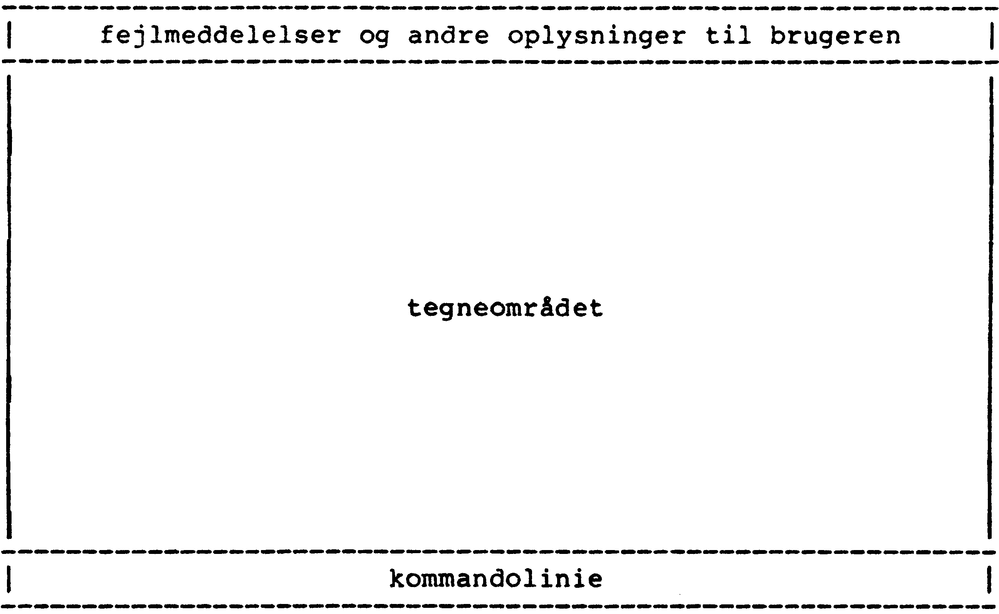
Den øverste linie anvendes til fejlmeddelelser og andre beskeder og spørgsmål til brugeren. Desuden bruges den, når man overvåger programudførelsen (dvs. udfører een ordre ad gangen, se kapitel 6).
Den nederste linie anvendes som kommandolinie. Den starter med
LOGO> og når der ikke står andet, er Mikro-Logo klar til
at modtage information fra brugeren. Det er her, brugeren giver
kommandoer til systemet og sætninger (ordrer) til skildpadden.
Kommandoerne anvendes til at administrere systemet. Det er kun muligt at have een kommando i kommandolinien. Kommandoerne beskrives i kapitel 5.
Eks. på kommandolinie med en kommando:
LOGO> hjælpSætningerne til skildpadden kan enten være basale systemdefinerede
(se kapitel 4) eller brugerdefinerede (se 4.4 og 5.1). Det er muligt at
have flere sætninger på samme linie, hvis de adskilles af ;
. Når kommandolinien indeholder skildpaddesætninger, kaldes den også
sætningslinien.
Eks. på kommandolinier med sætninger:
LOGO> skriv 13*13
LOGO> frem 100; venstre 90; frem 100Under indtastning i kommandolinien er det muligt at bruge editeringstasterne:
| Tast | Funktion |
|---|---|
← |
flytter markøren en plads til venstre, hvis det er muligt. |
→ |
flytter markøren en plads til højre, hvis det er muligt. |
↖ |
flytter markøren til starten af linien. |
↘ |
flytter markøren til slutningen af linien. |
TEGN IND |
skubber teksten til højre og indsætter en blank ved markøren. |
SLET TEGN |
sletter tegnet, hvor markøren står, og trækker teksten til venstre. |
⌫ |
sletter tegnet til venstre for markøren, trækker teksten til venstre og flytter markøren en plads til venstre. |
A1 |
sletter resten af linien fra, hvor markøren står. |
F1 |
fremkalder den forrige kommandolinie, som indeholder skildpaddesætninger, dvs. den forrige sætningslinie. |
↵
(Retur) |
signalerer, at kommandolinien er færdig og skal udføres. (NB: Det er lige meget, hvor markøren står i linien, når der tastes Retur: det er altid hele linien, der udføres). |
| Tast | Funktion |
|---|---|
ESC |
signalerer, at man fortryder, og kommandolinien slettes. |
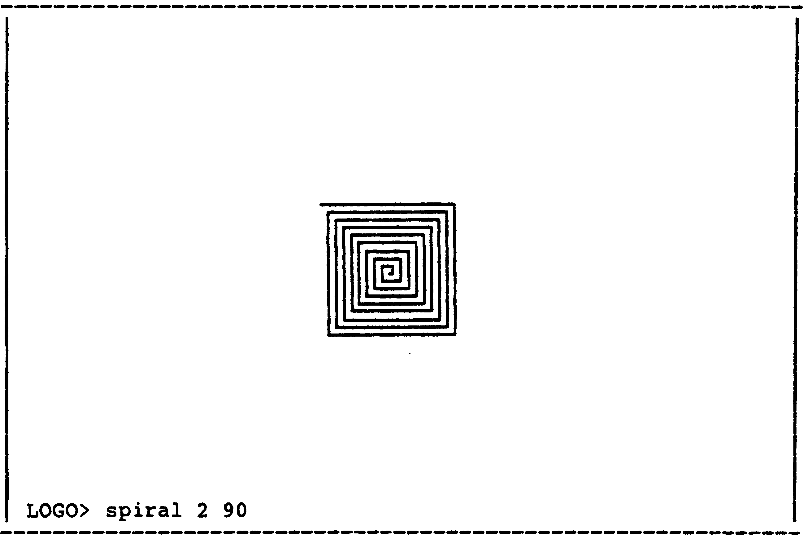
spiral er en brugerdefineret sætning med 2 parametre;
den defineres i afsnit 4.4.4. Når udførelsen er fuldført, forsvinder
spiral 2 90 fra kommandolinien, og systemet er klar til en
ny kommando eller nye sætninger.
Den resterende del af skærmen (dvs. alt undtagen den øverste og
nederste linie) kaldes tegneområdet, men anvendes også til tekst, idet
visse kommandoer har brug for at vise flere linier tekst på skærmen. Der
er en kommando tegnigen (dvs. lav tegningen igen), se 5.3.
Denne kommando bruges, hvis man vil have tegningen frem, som er blevet
slettet af en kommando, der bruger tegneområdet til tekst.
(Denne side er blank i originalen)
Til at tegne på skærmen anvendes en fiktiv skildpadde, som hele tiden har en placering og en retning, og som kan bringes til at tegne, når den flyttes. Når der startes, er skildpadden placeret midt på skærmen og pegende til højre, dvs. i position (0,0) og retning 0 grader. Det øverste højre hjørne af tegneområdet på en PICCOLINE skærm har koordinaterne (280,160), og det nederste venstre hjørne har koordinaterne (-280,-160), dvs. det er muligt at adressere fra -280 til 280 i vandret retning og fra -160 til 160 i lodret retning. På en Partner er de tilsvarende tal 360 og 230. Hvis skildpadden flyttes uden for dette område, vil der ikke blive tegnet på skærmen, når skildpadden flyttes, men skildpadden vil alligevel ændre position.
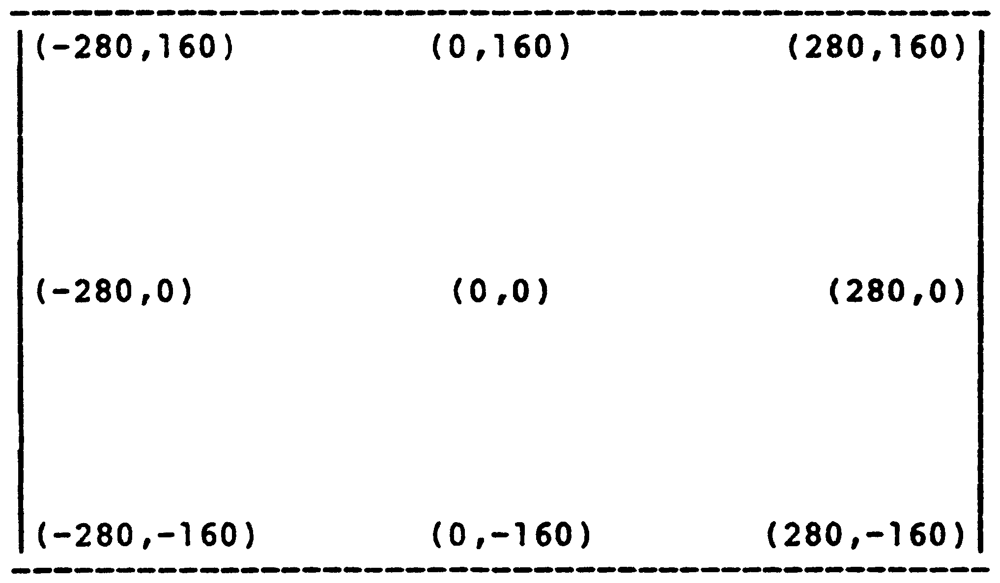
Sætningerne kan inddeles i tre slags: - tegnesætninger - tildelings-, indlæsnings- og udskrivningssætninger - kontrolsætninger
Men først følger et afsnit om udtryk og variable, som indgår som argumenter i sætningerne.
Første gang man læser denne manual, er det måske nemmere at forstå, hvis man starter med indledningen til afsnit 4.2 og eksemplerne i afsnit 4.2.5. Og derefter læser hele afsnit 4.2, inden afsnit 4.1 læses. Men da variable og udtryk bruges i afsnit 4.2, er afsnittene for fuldstændighedens skyld placeret i denne rækkefølge.
En variabel har et navn og en værdi. Navnet på variablen består af højst 16 bogstaver og cifre, hvor det første skal være et bogstav. Når der refereres til en variabels navn i et udtryk, er det variablens værdi, der skal indgå. Når der refereres til en variabels navn i en tildelingssætning eller indlæsningssætning (se 4.3), betyder det, at variablen skal have en ny værdi. Hvis en variabel refereres i et udtryk, inden den eksplicit har fået en værdi, har den værdien 0.
Eks. på variabelnavne:
sidelængde
antal
vinkel2Et udtryk er en beregningsforskrift, som kan udregnes til et heltal i
intervallet fra -32768 til 32767. Der må ikke være blanke (dvs.
“mellemslag”) i et udtryk. Der kan indgå følgende operatorer:
+, -, *, /,
**, =, <, >,
<=, >= og <> i et
udtryk.
Operatorerne har følgende betydninger:
| Operator | Betydning |
|---|---|
+ |
heltalsaddition eller positivt fortegn |
- |
heltalssubtraktion eller negativt fortegn |
* |
heltalsmultiplikation |
/ |
heltalsdivision, dvs. en eventuel rest smides væk. Der kommer en fejlmeddelelse, hvis divisoren er 0. |
** |
potensopløftning. Der kommer en fejlmeddelelse, hvis det andet argument er negativt. |
= |
lig med |
| Operator | Betydning |
|---|---|
< |
mindre end |
<= |
mindre end eller lig med |
> |
større end |
>= |
større end eller lig med |
<> |
forskellig fra |
De kræver alle to operander, bortset fra at + og
- også kan anvendes som fortegn. Som operander kan indgå
talkonstanter, variabelnavne, parentesudtryk, funktionsudtryk og andre
udtryk.
Eks.:
2+3
-2*vinkel
(side+20)*3Talkonstanter består af et antal cifre, som kan opfattes som et
heltal. Negative heltal laves som udtryk med - som
fortegnsoperator.
Eks.:
-100Variabelnavne i et udtryk betyder, at variablens værdi skal indgå på dette sted i udtrykket.
Eks.:
sidelængdeParentesudtryk er et udtryk omsluttet af parenteser.
Eks.:
(2+3)Funktionsudtryk: I øjeblikket er der kun een funktion,
tlf (en forkortelse for tilfældig). Denne kræver et
argument (i parenteser). Dette argument er et udtryk, som skal udregnes
til et positivt tal (ellers kommer der en fejlmelding). tlf
giver et tilfældigt heltal, som er større end eller lig 0 og mindre end
argumentet.
Eks.: tlf(100) giver et tilfældigt heltal mellem 0 og 99
(begge inclusive).
Udtryk kan selvfølgelig også indgå som operander i andre udtryk. Det er derfor nødvendigt at bestemme, i hvilken rækkefølge operatorerne udføres:
**)
(potensopløftning fra højre mod venstre, hvis der er flere af denne
operator).* og / (fra
venstre mod højre, hvis der er flere af disse operatorer).+ og - (fra venstre mod højre, hvis der
er flere af disse operatorer).=,
<, >, <=,
>=, og <>.Eks.: 3+4*5/3<-7+tlf(7*længde)+side
Dette udregnes på følgende måde (markeres ved at sætte ekstra parenteser):
3+((4*5)/3)((-7)+(tlf(7*længde)))+side< (mindre end).Det er kun muligt at have flere relationelle operatorer i et udtryk, hvis der er parenteser, så der ikke er to relationelle operatorer på “samme niveau”.
Eks.: (antal<10)=(side>20) er tilladt, hvorimod
1<2<3 ikke er tilladt.
Det er kun muligt at have fortegnene + og -
forrest i et udtryk, eller lige efter en relationel operator, eller
forrest i et udtryk i parenteser.
Eks.: 2*-antal er ikke tilladt, det kan i stedet skrives
som -2*antal
Alle relationelle operatorer (=, <,
<=, >, >=,
<>) giver resultatet 1, hvis relationen gælder mellem
de indgående operander (relationen er sand), og 0, hvis relationen ikke
gælder (relationen er falsk).
Eks.:
9*9=81
20*(tæller<10)Det første udtryk har værdien 1. Det andet udtryk har værdien 20
(hvis tæller er mindre end 10) eller værdien 0 (hvis
tæller ikke er mindre end 10).
Det er muligt at simulere de logiske operatorer AND (logisk og) og OR
(logisk eller) ved at bruge gange (*) og plus
(+), da 0 opfattes som falsk og et tal forskellig fra 0 som
sandt.
Eks.: (antal<10)*(side>20)
Dette udtryk er 1, hvis både antal er mindre end 10 og
side er større end 20.
Eks.: (antal<10)+(side>20)
Dette udtryk kan antage værdierne 0, 1 og 2. Hvis begge deludtryk er sande, er værdien 2. Hvis præcis et af deludtrykkene er sandt, er værdien 1. Hvis ingen af deludtrykkene er sande, er værdien 0. Dvs. udtrykket er sandt (forskellig fra 0), når bare et af deludtrykkene er sandt.
Husk: Der må ikke være blanke i udtryk.
Skildpadden er beskrevet ved tre størrelser: positionen, retningen og pennens type. Dette afsnit er derfor inddelt i underafsnit. De første tre beskriver, hvorledes man ændrer henholdsvis positionen, retningen og pennens type. Derefter følger et afsnit med andre sætninger, der også har indflydelse på skildpadden og tegningen. Til sidst er der et afsnit med eksempler.
Der er to forskellige måder at ændre skildpaddens position: relativ og absolut. Relativ ændring vil sige, at ændringen er relativ til, hvor skildpadden står i øjeblikket, og hvilken retning den har. Absolut ændring er uafhængig af den øjeblikkelige placering og retning. I alle tilfælde vil skildpaddens retning ikke blive ændret.
Når positionen ændres, vil pennens type afgøre, om der tegnes, slettes eller ingen af delene.
frem udtryk
fr udtryk
Flytter skildpadden frem, så langt som værdien af udtryk angiver, i
skildpaddens retning.
Eks.:
frem 100
fr side/2Hvis værdien af udtryk bliver negativ, svarer sætningen til
tilbage med det tilsvarende positive tal som argument.
tilbage udtryk
tb udtryk
Flytter skildpadden værdien af udtryk i den modsatte retning af
skildpaddens.
Eks.:
tilbage 50
tb længde*2sætx udtryk
Skildpaddens x-position ændres til værdien af udtryk. Y-positionen og
retningen ændres ikke. Dvs. skildpadden flyttes vandret.
Eks.:
sætx -200sæty udtryk
Skildpaddens y-position ændres til værdien af udtryk. X-positionen og
retningen ændres ikke. Dvs. skildpadden flyttes lodret.
Eks.:
sæty ymaxsætxy udtryk udtryk
Ændrer både x-positionen og y-positionen af skildpadden til værdierne af
de to udtryk. Retningen ændres ikke.
Eks.:
sætxy 200 100Når systemet startes, er skildpaddens position (0,0), dvs. midt på skærmen. Tegneområdet på en PICCOLINE skærm refererer fra -280 til 280 i vandret (x-aksens) retning og fra -160 til 160 i lodret (y-aksens) retning. Tegneområdet på en Partner skærm refererer fra -360 til 360 vandret og fra -230 til 230 lodret.
Skildpadden kan godt flyttes uden for tegneområdet, og den vil stadigvæk udføre de ordrer, den får, men der vil selvfølgelig ikke ske noget på skærmen.
Retningen kan også ændres både relativt og absolut. Systemet regner
med vinkler i området 0 grader til 360 grader, men brugeren kan
selvfølgelig godt bruge vinkler uden for dette område; de bliver bare
konverteret til det område, f.eks. bliver både -90 grader og 630 grader
konverteret til 270 grader. En retning på 0 grader betyder, at
skildpadden peger vandret til højre; 90 grader betyder, at skildpadden
peger opad. Når retningen ændres, vil den kun ses på skærmen, hvis
skildpadden er vist ved en pil (se kommandoen pil, afsnit
5.3).
venstre udtryk
ve udtryk
Skildpaddens retning ændres med værdien af udtryk (til venstre) i
forhold til, hvor den peger nu. Hvis værdien af udtryk er negativt,
svarer det til at dreje til højre med det tilsvarende positive
tal.
Eks.:
venstre 45
ve vinkel1*2højre udtryk
hø udtryk
Modsat af venstre.
Eks.: højre 90 er det samme som venstre 270
eller venstre -90.
drejtil udtryk
Skildpaddens retning sættes lig værdien af udtryk (uafhængig af
retningen før).
Eks.:
drejtil 90Når systemet starter, er retningen 0 grader (vandret til højre).
Pentypen angiver, hvad der sker, når skildpadden flyttes. Skildpadden
kan enten tegne, slette eller bare flyttes. Pentypen ændres ved følgende
tre sætninger; desuden vil viskud og start (se
4.2.4) ændre pentypen til at tegne.
tegn
Når skildpadden flyttes, vil der blive tegnet en linie fra punktet, der
flyttes fra, til punktet, der flyttes til.
slet
Når skildpadden flyttes, vil der blive slettet punkter på de linier, der
krydses, og hele linier, hvor skildpadden løber oven i en eksisterende
linie.
løft
Hverken tegner eller sletter. Når skildpadden flyttes, vil der ikke ske
noget, bortset fra at skildpaddens position ændres, og det vil kun kunne
ses på skærmen, hvis skildpadden er markeret med en pil (se kommandoen
pil, 5.3).
Når systemet startes, vil pennens type være tegn.
hjem
Flytter skildpadden til position (0,0) (dvs. midt på skærmen) og med
retning 0 grader. Afhængig af pennens type vil der blive tegnet, slettet
eller ske ingenting ved flytningen.
Eks.: hjem er det samme som:
sætxy 0 0
drejtil 0viskud
Sletter tegningen, men ændrer ikke skildpaddens position og retning.
Pentypen ændres til tegn.
start
Sletter tegningen og placerer skildpadden midt på skærmen, dvs. i
position (0,0), og med retning 0 grader. Pentypen ændres til
tegn.
Eks.: start kan laves som:
hjem
viskudDerimod vil:
viskud
hjemikke gøre det, da der bliver tegnet en linie fra positionen før til (0,0).
hvor variabel variabel variabel
Aflæser skildpaddens position og retning, så de kan indgå i udtryk i de
følgende sætninger (se eksempel 2 i afsnit 4.2.5).
Eks.:
hvor x y vinkelVariablen x får værdien af skildpaddens x-position,
variablen y får værdien af skildpaddens y-position, og
vinkel får værdien af skildpaddens retning.
pilind
Sætter en pil til at markere skildpaddens position og retning. Pilen
slettes, når skildpadden flyttes eller ændrer retning, eller hvis
sætningen pilud gives. Hvis man er interesseret i at have
en pil hele tiden, skal man bruge kommandoen pil (se
5.3).
pilud
Sletter en pil sat ved pilind, men ikke ved kommandoen
pil (se denne, 5.3).
Det kan være en fordel at bruge relative operatorer til at ændre skildpaddens position og retning, da det derved er muligt at bruge de samme ordrer til at lave den samme tegning et andet sted og i en anden retning. Dette er nemt ved hjælp af procedurer (se 4.4), idet man så giver en samling af ordrer et navn og udfører denne samling af ordrer ved at referere til dette navn.
I de følgende eksempler kan ordrerne skrives over en eller flere
sætningslinier. Hvis der skrives flere ordrer på en sætningslinie, skal
de adskilles med ; . For overskuelighedens skyld skrives
ordrerne under hinanden med een på hver linie.
Følgende sætninger vil tegne et kvadrat med sidelængde 100:
frem 100
venstre 90
frem 100
venstre 90
frem 100
venstre 90
frem 100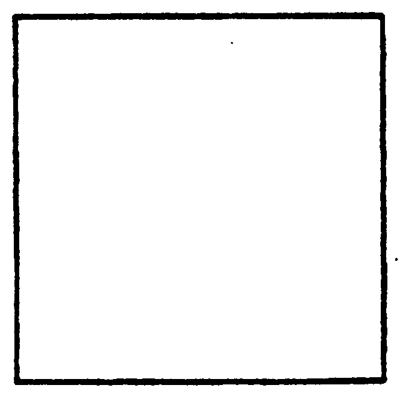
Efter disse ordrer vil skildpaddens retning være nedad, dvs. hvis vi skriver ordren:
pilindfår vi denne tegning på skærmen:
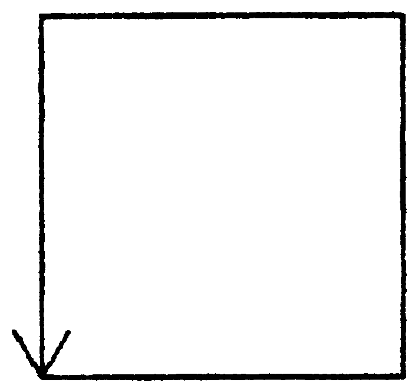
I afsnit 4.4.3 beskrives en anden og kortere måde at lave et kvadrat på.
Et M kan tegnes som:
venstre 90
frem 100
højre 90+45
frem 70
venstre 90
frem 70
venstre 45
tilbage 100
højre 90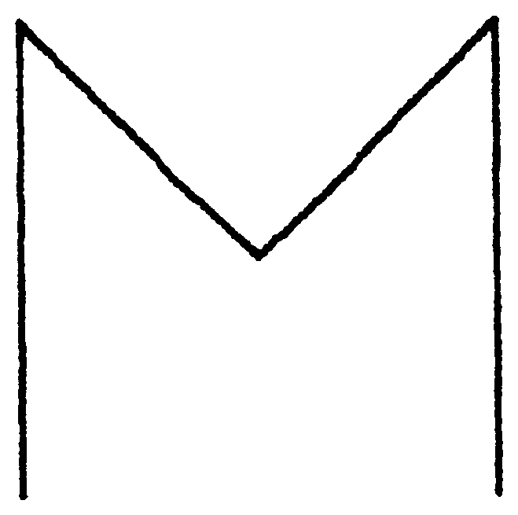
Her vil skildpadden starte nederst i første ben af M og slutte nederst i andet ben. Hvis man ønsker, at skildpadden også skal slutte nederst i første ben, kan det gøres ved at tilføje:
hvor x y vinkelsom den første sætning og
sætxy x ysom den sidste sætning.
Dette eksempel laver et H, hvor højden er 100 og bredden 60, og hvor skildpadden starter og slutter nederst i det første ben pegende henad den linie, H’et kommer til at stå på (denne linie er ikke nødvendigvis vandret; det afhænger af skildpaddens retning, inden de følgende ordrer udføres).
venstre 90
frem 100
tilbage 50
højre 90
frem 60
venstre 90
frem 50
tilbage 100
højre 90
løft
tilbage 60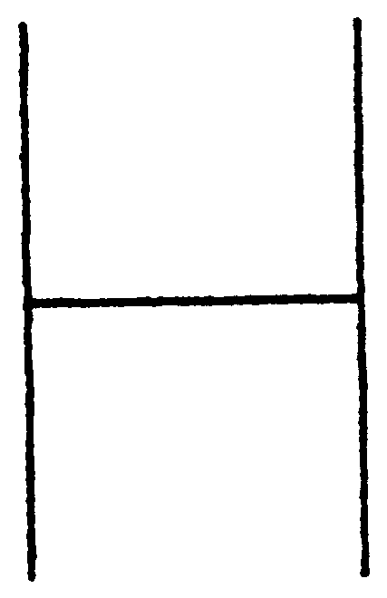
Hvis vi efter at have tegnet H finder ud af, at vi kun vil have et lille h, kan vi ændre tegningen (vi forudsætter, at vi ikke har lavet nogle ordrer i mellemtiden; dette betyder bl.a., at pennen er løftet):
frem 60
venstre 90
frem 50
slet
frem 50
løft
tilbage 100
højre 90
tilbage 60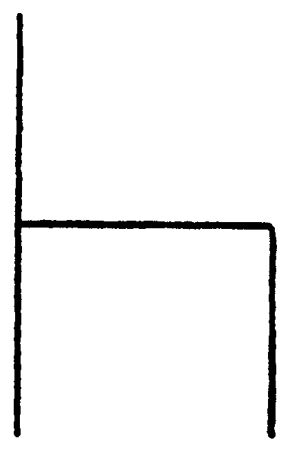
variabel := udtryk
variabel = udtryk
Betyder, at variablen får en ny værdi, nemlig værdien af udtryk.
Der må ikke være blanke mellem : og =, men
der må, men behøver ikke, være blanke efter variabelnavnet eller inden
udtrykket.
Eks.:
vinkel = 360/antalsider
tæller := tæller+1I den første tildelingssætning udregnes udtrykket
360/antalsider, og variablen vinkel får denne
værdi. I den anden tildelingssætning tælles variablen
tæller een op.
henttal variabel
Bevirker, at programudførelsen stopper, og navnet på variablen skrives i
øverste linie. Udførelsen fortsætter først, når brugeren skriver et tal
efterfulgt af et tryk på Retur-tasten.
Eks.:
henttal sidelængdehenttast variabel
Ved udførelsen af denne sætning ventes der, indtil en tast trykkes ned.
Variablen får ASCII-værdien (dvs. det tal), der svarer til tasten, der
blev trykket ned. En tabel over ASCII-værdierne findes i bilag D.
Eks.:
henttast kommandoUdførelsen stopper indtil en tast trykkes ned. Hvis a
trykkes ned, får variablen kommando værdien 97; hvis
A trykkes ned, får kommando værdien 65.
læstast variabel
Variablen tildeles værdien 0, hvis ingen tast har været trykket ned,
ellers får variablen ASCII-værdien af den nedtrykkede tast. Det må ikke
være mellemrumstasten, Retur eller ESC-tasten, da de bruges i
forbindelse med overvågning af udførelsen af sætninger (se kapitel 6).
Tegnenes ASCII-værdier findes i bilag D. Bemærk forskellen mellem
henttast og læstast.
Eks.:
læstast kommandoskriv udtryk
Skriver værdien af udtryk i den øverste linie. Kan bl.a. anvendes som en
slags lommeregner fra kommandolinien.
Eks.:
skriv længde*højdesætning tekst
Den tekst, der kommer efter sætning, skrives i skærmens
øverste linie. sætning kan ikke anvendes fra
kommandolinien, men kun i procedurer, se 4.4.4.
Eks.:
sætning arealet erUdskriver arealet er i den øverste linie på skærmen.
udport udtryk udtryk
Skriver det andet udtryks værdi ud på den port, som det første udtryk
angiver. Denne ordre kan anvendes til at styre robotter og trafiklys,
som er koblet til en af portene bag på en PICCOLINE eller en Partner,
men det kræver et nøjere kendskab til en enhed, der er koblet til en
port for at vide, hvad der skal sendes ud på porten.
Der er tre måder at lave kontrolsætninger: procedurer, betingelsessætninger og gentagelsessætninger. Herudover beskriver dette afsnit også definition af procedurer.
En procedure er en navngivning af en sekvens af ordrer. Det beskrives i afsnit 4.4.4 og 5.1, hvorledes man laver procedurer. En procedure udføres ved at skrive dens navn i en sætningslinie.
Eks.: Hvis hus er navnet på en procedure, der tegner en
husgavl, vil sætningslinien, som kun indeholder ordet hus
lave tegningen nedenfor.
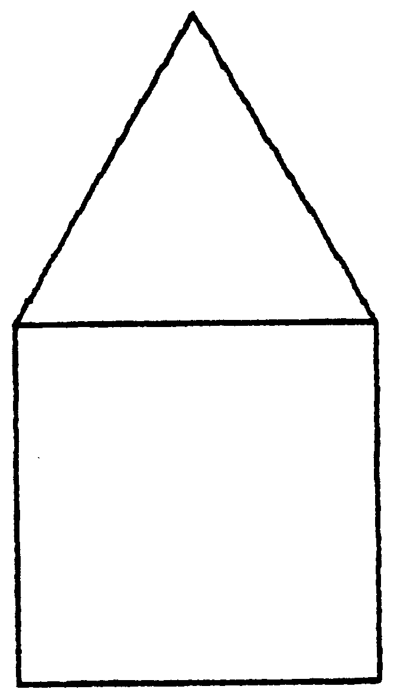
Procedurer kan også have parametre på samme måde som de prædefinerede
sætninger, f.eks. har frem en parameter og
sætxy to parametre.
Eks.: Hvis polygon er en procedure med to parametre, der
angiver sidelængden og antallet af kanter i polygonen, vil de følgende
sætningslinier tegne en tikant og en sekskant.
polygon 50 10
løft
frem 100
tegn
polygon 100 6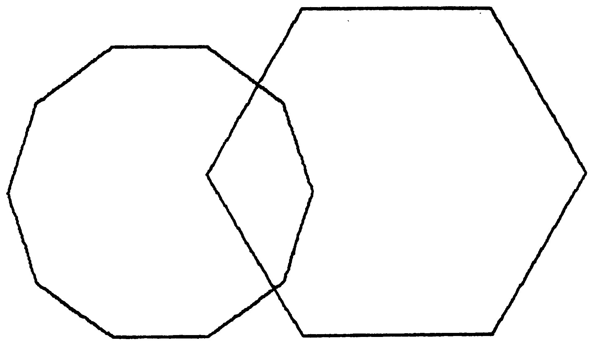
Det er nødvendigt, at aktuelle parametre (dvs. parametrene i procedurekaldet) forekommer i samme rækkefølge som de formelle parametre (dvs. parametrene i proceduredefinitionen) (se også 4.4.4).
Eks.: polygon 10 50 er en 50-kant med sidelængden 10,
hvis polygon er defineret, så den første formelle parameter
er sidelængden og den anden antallet af kanter.
Disse kaldes således, da en betingelse styrer, hvilke sætninger der udføres. Der er to udgaver af betingelsessætninger (også kaldet hvis-sætninger):
hvis udtryk
sætninger
ellers
sætninger
sluthvishvis udtryk
sætninger
sluthvisHvis udtryk er sandt (dvs. forskelligt fra 0), udføres sætningerne
lige efter, indtil et eventuelt ellers mødes, hvorefter der
fortsættes efter sluthvis. Hvis udtryk er falsk (dvs. lig
0), udføres sætningerne mellem ellers og
sluthvis; hvis der ikke er noget ellers,
fortsættes bare efter sluthvis.
Der må gerne være mere end een sætning mellem hvis og
ellers og mellem ellers og
sluthvis.
Eks.:
hvis antal>2
polygon 100 antal
ellers
frem 100
tilbage 100
sluthvisHvis antal er større end 2 tegnes en polygon med
sidelængde 100. Hvis antal er mindre end eller lig med 2
tegnes bare en streg af længde 100.
Eks.:
hvis x>100
hjem
x := 0
sluthvisBemærk, at når betingelsessætninger skrives i kommandolinien, skal de
enkelte dele adskilles med ; og hele hvis-sætningen skal
være på een linie.
Eks.:
hvis x>100; hjem; x:=0; sluthvisEn gentagelsessætning udfører nogle sætninger et vist antal gange:
gentag udtryk
sætninger
hertilUdtrykket udregnes, og hvis det er positivt, udføres sætningerne
mellem gentag og hertil det antal gange, som
udtrykket angiver.
Der må gerne være mere end een sætning mellem gentag og
hertil.
Eks.:
gentag 4
frem 100
venstre 90
hertilTegner et kvadrat med sidelængde 100 (sammenlign med eksempel 1, afsnit 4.2.5). Bemærk at skildpaddens retning er den samme før og efter udførelsen af sætningerne ovenfor, hvorimod dette ikke er tilfældet i eksempel 1.
Eks.:
gentag antalsider
frem sidelængde
venstre 360/antalsider
hertilTegner en polygon.
Her skal også sættes ; når en gentagelsessætning skrives
i sætningslinien, og hele gentagelsessætningen skal være på een
linie.
Eks.:
gentag antal; fr side; ve 360/antal; hertilNår man definerer procedurer, er det ikke muligt at have en tegning på skærmen, da tegneområdet bruges til at indeholde sætningerne i proceduren. Det er kun muligt at definere procedurer ved bestemte kommandoer (se 5.1); det er ikke muligt at gøre det direkte i sætningslinien. Når man har defineret en ny procedure, har man lært skildpadden en ny sætning; en procedure kaldes derfor også en brugerdefineret sætning.
En procedure består af maksimalt 21 linier. Den første linie er
procedurehovedet. De andre linier (procedurekroppen) indeholder
sætninger; dog skal den sidste indeholde ordet slut. Der må
ikke stå flere sætninger på en linie (i modsætning til i
sætningslinien).
Procedurehovedet består af ordet begynd efterfulgt af
navnet på proceduren og navne på eventuelle formelle parametre. Der kan
højst være 6 parametre. Alle navne skal starte med et bogstav og må
efterfølges af op til 15 bogstaver eller cifre.
Eks. på et procedurehoved:
begynd polygon side antalParameternavne er lokale til proceduren, dvs. i sætningerne i proceduren kan man referere til parameternavne.
Eks.:
begynd polygon side antal
gentag antal
frem side
venstre 360/antal
hertil
slutProceduren hedder altså polygon og har 2 parametre, hvis
formelle navne er side og antal. Hvis man
laver et procedurekald, f.eks. polygon 20 8, vil
sætningerne for proceduren blive udført, idet side har
værdien 20 og antal værdien 8.
Bemærk: Systemet vil lave indrykninger, som bruges
til at markere, hvorledes begynd-slut,
gentag-hertil og
hvis-ellers-sluthvis hører
sammen. Man skal ikke bekymre sig om indrykninger, når man skriver en
procedure ind; de laves automatisk af Mikro-Logo, når proceduren er
færdig.
En procedure kaldes rekursiv, hvis den i procedurekroppen refererer til sit eget navn.
Eks.:
begynd spiral side vinkel
frem side
venstre vinkel
spiral side+2 vinkel
slutHvis man for eksempel kalder spiral 2 90, vil den kalde
spiral 4 90, som kalder spiral 6 90 o.s.v. Da
hvert kald kræver noget lager, er der en øvre grænse for, hvor mange
rekursive kald der kan laves.
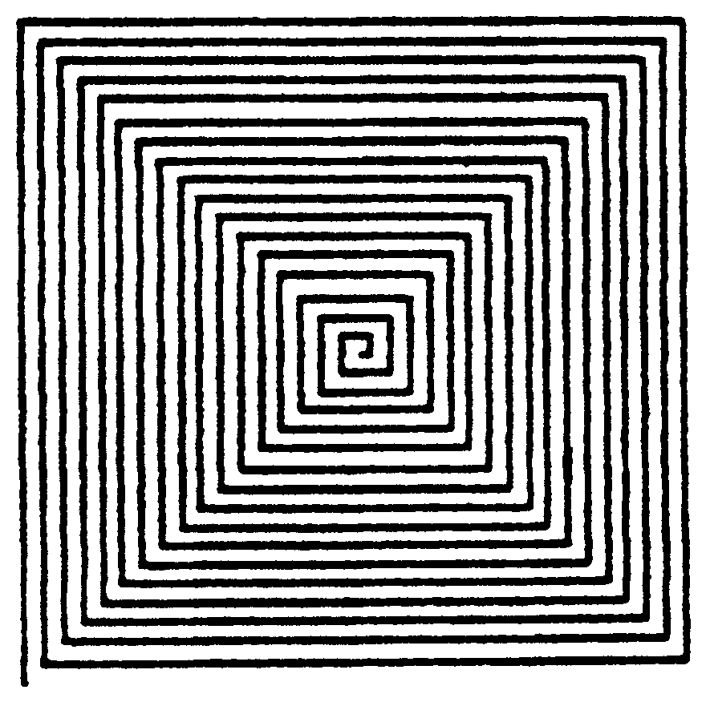
For at kunne stoppe en rekursion er der endnu en sætning,
stop, som — hvis den mødes under udførelse af et
procedurekald — bevirker, at dette procedurekald afsluttes.
Eks.:
begynd spiral side vinkel
hvis side>100
stop
ellers
frem side
venstre vinkel
spiral side+2 vinkel
sluthvis
slutHvis man kalder spiral 2 90, vil der kun blive lavet 51
kald af spiral, da spiral 102 90 vil opfylde
stop-betingelsen.
Hvis et stop mødes i sætningslinien, stopper udførelsen
af sætningslinien, også selv om der er mere tilbage i
sætningslinien.
Der er flere eksempler med procedurer i bilag B.
Kommandoer bruges til administration af systemet. Kommandoerne kan inddeles i 4 grupper:
Når man afgiver en kommando til systemet, behøver man ikke give alle
argumenter; systemet spørger selv efter de manglende argumenter, og det
fortæller ovenikøbet, hvad argumentet skal betyde (f.eks.
procedurenavn). Det er derfor, at kommandoerne i dette kapitel har
forskellige former, svarende til hvor mange argumenter der mangler.
Under indtastning af manglende argumenter er det muligt at rette på
samme måde som i kommandolinien (se kap. 3); ESC betyder
så, at man fortryder kommandoen.
Nogle af kommandoerne er indlagt som funktionstaster (F2, F3, … F12 i den øverste række på tastaturet).
Hvis en kommando er lagt ind i en funktionstast, vil et tryk på
funktionstasten bevirke, at den tilsvarende kommando udføres (bortset
fra F9, som står for disk, se 5.2). Eventuelle argumenter
til kommandoen vil mangle og skal indtastes bagefter.
Hvis der som argumenter til en kommando gives navne på procedurer og filer, som ikke eksisterer, og hvor kommandoen forventer, at de skal eksistere, kommer der en fejlmeddelelse (Fejlmeddelelserne er beskrevet i bilag E).
Nogle af kommandoerne (plist, pdisk,
kopi, phjælp) kræver, at der er en tilsluttet
skriver (printer), så første gang en af disse anvendes, bliver brugeren
spurgt om, hvor skriveren sidder på. Der er tre muligheder (0, 1 og 2),
hvis datamaten ikke er tilsluttet lokalnet:
0: skriver-udgangen på centralenheden (CPU’en),1: V24-udgangen på CPU’en (ikke standardudstyr) og2: skriver-udgangen på disketteenheden.Hvis datamaten er tilsluttet lokalnet, er der 16 muligheder (tallene 0 til 15), og navngivningen af skrivere afgør, hvorledes de hænger sammen med de eksisterende.
Hvis der svares med RETUR, vælges den aktuelle skriver, der var, da
Mikro-Logo startede op. Kommandoen kopi kræver en RC603
skriver eller en tilsvarende skriver, der kan tegne grafik.
Der findes både kommandoer til at oprette og ændre indholdet af procedurer, og kommandoer der kun giver information om de definerede procedurer.
Der er to måder at lave en procedure: Enten skriver man sætningerne, som proceduren skal bestå af (v.hj.a. en editor, dvs. et retteprogram), eller også laver man den ud fra en tegning. Sidst i dette afsnit er der en oversigt over kommandoerne, der gør dette, men først en mere uddybende beskrivelse af, hvordan det gøres.
Når man laver en procedure v.hj.a. editoren, er der to måder at
starte på: Enten kan man starte helt fra bunden, eller også kan man
ændre en allerede eksisterende procedure. Kommandoen lær
(funktionstast F5) laver en blank side, hvor der kun står
begynd i øverste linie, dvs. man kan indtaste en procedure.
Kommandoen ret (F6) beder om et procedurenavn, og teksten
for denne procedure kommer så op på skærmen, og det er muligt at rette i
både programhovedet og programkroppen. Hvis man laver en procedure med
samme navn som en allerede eksisterende, bliver den gamle slettet.
Under editering har følgende taster speciel betydning:
| Tast | Funktion |
|---|---|
← |
flytter markøren en plads til venstre, undtagen hvis markøren står over det første tegn på en linie, så flytter den til det sidste tegn på linien over (hvis det ikke er i den øverste linie, for så flyttes markøren ikke). |
→ |
flytter markøren en plads til højre, undtagen hvis markøren står over det sidste tegn på en linie, så flyttes til det første tegn på næste linie (hvis det ikke er i den sidste linie). |
↑ |
flytter markøren en linie op, hvis det er muligt. |
↓ |
flytter markøren en linie ned, hvis det er muligt. |
| Tast | Funktion |
|---|---|
↵
(Retur) |
flytter markøren ned først på næste linie, undtagen hvis markøren er i sidste linie, hvor det virker ligesom A4-tasten (editering er færdig og accepteres). |
TEGN IND |
skubber teksten til højre for markøren til højre og indsætter en blank ved markøren. |
SLET TEGN |
sletter tegnet, hvor markøren står, og trækker teksten til venstre. |
⌫ |
sletter tegnet til venstre for markøren og trækker teksten sammen. |
A1 |
sletter resten af linien fra, hvor markøren står. |
A2 |
sletter en linie og rykker de efterfølgende linier op. |
A3 |
skubber linierne under markøren ned og indsætter en blank linie. |
A4 |
signalerer, at editeringen er færdig, og
proceduren skal gemmes og oversættes. Editoren sætter selv
slut, hvis det mangler, og procedurekroppen ikke er på mere
end 19 linier. Hvis der ikke er plads til slut, kan
editoren ikke forlades med A4. |
ESC |
signalerer, at man fortryder editeringen, og teksten ikke skal gemmes. |
Hvis der er fejl i oversættelsen efter A4 (f.eks. manglende argument
til sætningen frem) kommer der en fejlmeddelelse i den
øverste linie (disse fejlmeddelelser er beskrevet i bilag E.2.1).
Desuden vender systemet tilbage til kommandolinien, hvor brugeren kan
afgive kommandoer og sætninger, men det er ikke muligt at udføre nogle
procedurer, før fejlen er rettet.
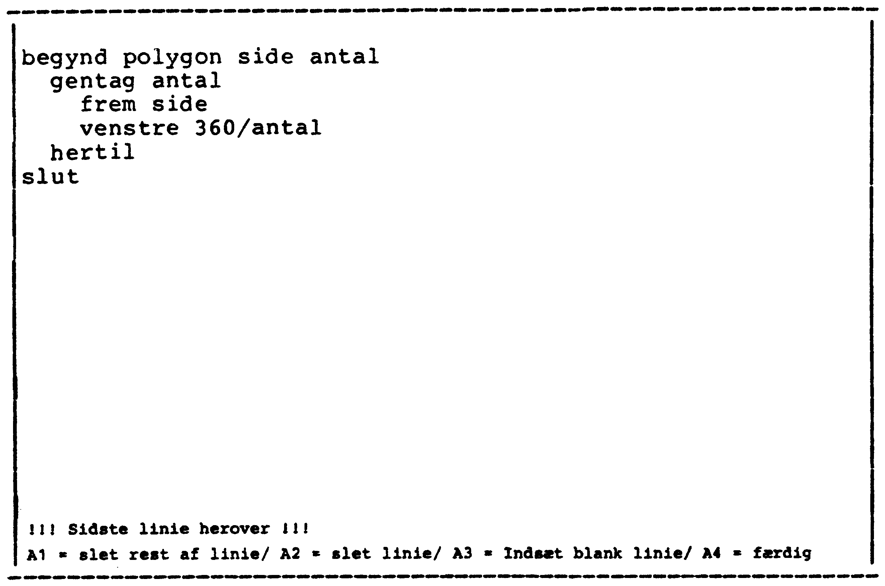
Den anden måde at lave procedurer på er at lave en tegning ved at
skrive sætninger i kommandolinien og så udføre dem. Når tegningen er
færdig, bruger man kommandoen lav, som så beder om et
procedurenavn og laver en procedure uden parametre med dette navn og de
brugte sætninger som krop. Da en procedurekrop kun må indeholde 19
sætningslinier, og da glem alle (se 5.1.2),
start og viskud betyder, at skærmen viskes
ren, er det sætningerne siden det sidste glem alle,
start eller viskud i kommandolinien, der
bliver sat ind i procedurekroppen.
Hvis man forsøger at lave en procedure ved lav
kommandoen, og denne procedure viser sig at være for lang, får man
mulighed for at rette i proceduren, hvor kroppen er de første 19
sætninger eller de sidste 19 sætninger. Så hvis man vil bruge
lav, skal man være omhyggelig, da det kun er muligt at “få
fat i” alle ordrer, hvis der er færre end 38.
Ved at bruge fortryd kommandoen (se 5.3) er det muligt
at fortryde den sidst udførte sætningslinie, og derved er
lav kommandoen god til at lave en foreløbig version af en
procedure, som så kan rettes til med kommandoen ret, som
beskrevet tidligere i dette afsnit.
Her følger en oversigt over kommandoerne, som er beskrevet i dette afsnit. De er beskrevet på samme form, som de øvrige kommandoer beskrives.
lær
F5
Bruges til at oprette en ny procedure. Kommandoen er først færdig, når
A4 eller ESC trykkes ned.
ret pnavn
ret
F6
Bruges til at rette en eksisterende procedure. Da procedurehovedet også
kan editeres, kan kommandoen også bruges til at lave en ny procedure. A4
eller ESC afslutter kommandoen.
lav pnavn
lav
Laver en ny procedure ud fra de ordrer, der er brugt siden sidste
glem alle (se 5.1.2), start eller
viskud. Hvis der er brugt flere end 19, er der mulighed for
at editere proceduren med de første 19 linier eller med de sidste 19
linier.
I alle tilfælde gælder, at hvis der laves en procedure, som har samme
navn som en allerede eksisterende, vil den eksisterende blive slettet,
når editeringen accepteres med A4-tasten eller oprettes med
lav kommandoen.
I forrige afsnit beskrev vi, hvorledes man kan definere og ændre procedurer. I dette afsnit beskrives, hvorledes vi bestyrer procedurerne.
glem pnavn
glem
F4
Sletter proceduren med navnet pnavn. Hvis
pnavn er lig alle, slettes alle procedurer og
variable, og tegningen viskes ud (som ved sætningen start).
Hvis der ikke er en procedure pnavn, fås en
fejlmeddelelse.
hvilke
F3
Giver en liste over de definerede procedurer og disses formelle
parametre. hvilke kan stoppes på samme måde som
list (se nedenfor), men der er kun behov for det, hvis der
er over 21 procedurer.
Eks.:
begynd polygon side antal
begynd trekant side
begynd firkant side
begynd cirkel radiuslist pnavn
list
F2
Udskriver sætningerne for proceduren pnavn på skærmen. Hvis
pnavn er lig alle, udskrives alle procedurer
med en blank linie mellem hver procedure. Hvis der ikke er en procedure
pnavn, fås en fejlmeddelelse.
Da udskriften kan fylde mere end et skærmbillede (hvis
pnavn er alle), er det muligt at stoppe den
ved et tryk på mellemrumstasten. Yderligere tryk på mellemrum vil
bevirke, at der kommer en linie ad gangen. Tryk på en anden tast
fortsætter udskriften. Udskriften kan stoppes helt ved tryk på
ESC-tasten.
plist pnavn
plist
Udskriver på skriveren i stedet for på skærmen, men fungerer ellers som
list, bortset fra, at udskriften ikke kan afbrydes eller
stoppes.
Når man afslutter Mikro-Logo (kommandoen farvel, afsnit
5.4), mister man alle de procedurer, man har lavet. Det er derfor gjort
muligt at gemme sine procedurer på diskette-filer, således at man kan få
fat i procedurerne, når man senere igen anvender Mikro-Logo.
En fil er et område på en diskette. En fil med Logo-procedurer
refereres ved dens navn, som består af højst 8 tegn, hvor det første er
et bogstav, og de øvrige er bogstaver eller cifre. Bogstaver i filnavne
må ikke være æ, ø eller å (dette skyldes, at styresystemet er
amerikansk); dette er i modsætning til variabel-, procedure- og
parameternavne, som gerne må indeholde æ, ø og å. Foran selve filnavnet
kan det specificeres, på hvilken diskettestation filen skal gemmes på
eller findes på. Diskettestationen specificeres med et bogstav og
adskilles fra selve filnavnet med et :. Den første
diskettestation i en disketteenhed hedder a og en eventuel
anden b. Hvis diskettestationen ikke specificeres, er det
den aktuelle disk, dvs. den, hvorfra Mikro-Logo blev startet op (se
brugervejledning for den respektive maskine).
Eks. på filnavne:
polygon
b:blomster
a:umuligdisk
F9
Skriver navnene på de filer med Logo-procedurer, der er på den aktuelle
disk. Udover navnene skrives også størrelsen af filerne (i bytes).
Bemærk: F9 bevirker ikke, at disk
udføres. Først efter et tryk på Retur udføres kommandoen
disk, da F9/disk også kan anvendes på andre
diskettestationer end den aktuelle (se nedenfor).
Eks.: Kommandoen disk vil give følgende udskrift, hvis
den bruges på en kopi af distributionsdisketten:
kasse 6528 b
polygon 2176 b
spiral 1664 b
stjerne 1152 bdisk bogstav
F9
Som ovenfor bortset fra, at det er på den diskette, der er i den
diskettestation, som bogstav angiver.
Eks.: disk b
pdisk
pdisk bogstav
Som ovenfor bortset fra, at udskriften kommer på skriver i stedet for på
skærmen.
gem pnavn filnavn
gem pnavn
gem
F11
Hvis pnavn er alle, bliver alle procedurer
gemt på filen filnavn, ellers bliver proceduren
pnavn gemt på filen filnavn. Hvis filen
filnavn eksisterer i forvejen, bliver brugeren bedt om at
bekræfte, at den skal slettes.
tilføj pnavn filnavn
tilføj pnavn
tilføj
F12
Proceduren pnavn (alle procedurer, hvis pnavn
er alle) bliver tilføjet til filen filnavn.
Hvis filen filnavn ikke eksisterer, kommer der en
fejlmeddelelse.
hent filnavn
hent
F10
Indlæser de procedurer, der er på filen filnavn. Hvis der i
forvejen er procedurer, som har samme navne som nogle af de indlæste,
bliver de første slettet.
fjern filnavn
fjern
Sletter en fil med Logo-procedurer på disketten. Hvis filen ikke
eksisterer, kommer der en fejlmeddelelse.
kopi
F7
Laver en kopi af tegningen på skriveren. Det er nødvendigt, at der er en
GSX grafik-driver til skriveren, som der f.eks. er til RC603.
tegnigen
Tegner tegningen på skærmen igen. Denne kommando er specielt anvendelig,
hvis man ønsker at fortsætte på en tegning, der er blevet slettet ved en
af de kommandoer, der bruger hele skærmen til tekst.
Både kopi og tegnigen tegner fra sidste
gang, man anvendte glem alle, start eller
viskud i kommandolinien. Hvis man anvender flere sætninger
siden sidste glem alle, start eller
viskud, end der er plads til, bliver man advaret.
holger
Holger er en gulv-skildpadde; i øjeblikket kan følgende tre styres fra
Mikro-Logo: Jessop Micro-Electronics, Valiant og Tegnebilen fra
Mikro-Værkstedet i Odense. Når Holger kobles til, vil den udføre de
ordrer, man skriver i sætningslinien, hvorved det er muligt at lave den
samme tegning på gulvet og på skærmen.
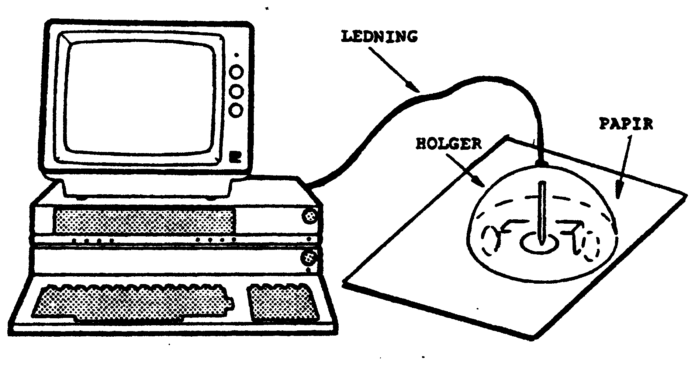
Holger kobles til og fra ved kommandoen holger; hvis
Holger er koblet til, vil den blive koblet fra, når kommandoen
holger gives, og omvendt.
Når Holger kobles til, bliver brugeren spurgt, om Holger er sat til skriverudgangen på centralenheden (CPU’en) eller skriverudgangen på disketteenheden. Det er ikke muligt at styre en Holger over nettet, da det kræves, at man har fuldstændig kontrol over den hele tiden. Herudover spørges der efter en datafil for skildpadden. Denne datafil indeholder forskellige oplysninger om skildpadden. På distributionsdisketten findes følgende datafiler:
jessop beskriver skildpadden fra
Jessop Micro-Electronicsvaliant beskriver skildpadden fra
Valiantbil beskriver tegnebilen fra
Mikro-Værkstedet i OdenseDet er ikke muligt at bruge Holger samtidigt med plotteren.
plotter
Kobler en plotter til og fra (på samme måde som ved
holger).
Når plotteren kobles til, bliver brugeren spurgt om hvilken skriver, plotteren er placeret som (se også bemærkningerne om skrivere i det indledende afsnit i dette kapitel). Herudover spørges der efter en datafil for plotteren. Denne datafil indeholder forskellige oplysninger om plotteren. På distributionsdisketten findes følgende datafiler:
rc621 beskriver plotteren som
Regnecentralen levererroland beskriver Roland-plottere og
Digi-Plotplotter indeholder en skabelon for
indholdet på en datafilDet er ikke muligt at bruge plotteren samtidigt med
holger.
Ctrl-P
(dvs. Ctrl-tasten holdes nede, og der tastes P)
Sætter pennen på plotteren ned i venstre hjørne (bruges for at undgå, at
blækket løber ud på tegningen, og for at slukke alarm-lampen på
plotteren, hvis plotterpennen er kommet udenfor plotterens tegneområde).
Når plotteren kobles fra, sættes plotterpennen også ned i venstre
hjørne.
farvel
Afslutter Mikro-Logo. Inden man afslutter, bør man gemme de procedurer,
man ønsker at bruge ved en senere lejlighed (se afsnit 5.2).
pil
Bruges til at skifte, om skildpaddens position og retning skal angives
med en lille pil. Dette er meget anvendeligt for begyndere, idet det kan
være vanskeligt at holde styr på specielt retningen af skildpadden.
Kommandoen pil er (ligesom kommandoerne
holger og plotter) en skifter, så hvis
kommandoen pil gives, vil pilen blive vist, hvis den ikke
var vist før, og omvendt.
status
Skriver skildpaddens position, retning og pentype i øverste linie af
skærmen.
fortryd
F8
Fortryder den sidst udførte sætningslinie, dvs. de streger, der blev
tegnet, bliver slettet, og de streger, der blev slettet, bliver
gentegnet. Men da systemet ikke kan huske, hvis man har tegnet streger
oven i hinanden, kan der ske uønskede ting, hvis man fortryder en linie,
der er tegnet oven i en anden. Hvis man fortryder en sætningslinie med
start eller viskud, får man en
fejlmeddelelse.
hjælp
Giver information om Mikro-Logo, bl.a. en oversigt og en kort
beskrivelse af sætninger og kommandoer.
phjælp
Skriver oversigten og beskrivelsen af sætninger og kommandoer på
skriveren.
R
Ctrl-F
(dvs. Ctrl-tasten holdes nede, og der tastes F)
Skifter mellem, at tegningen viskes ud inden en ny sætningslinie, og der
tegnes videre på tegningen, når der gives en ny sætningslinie. Når
Mikro-Logo starter, vil det sidste være tilfældet, dvs. tegningen
slettes ikke, når en ny sætningslinie udføres.
lager
Anvendes til aftestning af Mikro-Logo.
Når en sætningslinie udføres, kan det være svært at overskue,
hvorledes tegningen bliver til, specielt hvis der er mange
procedurekald. Derfor er det gjort muligt at afbryde udførelsen og få
udført en sætning ad gangen. Dette gøres efter samme princip som ved
list (afsnit 5.1).
Når der tastes mellemrum, afbrydes udførelsen midlertidigt, og sætningen, der udføres, skrives i den øverste linie sammen med de aktuelle argumenter. Herefter vil der for hver gang der tastes mellemrum, blive udført en linie, og denne vil blive vist i øverste linie, indtil der trykkes på ESC eller Retur. Hvis det er ESC, stoppes udførelsen; hvis det er Retur, fortsættes på normal vis. Hvis der tastes ESC uden forudgående mellemrum, stoppes udførelsen også.
Eks.: Hvis proceduren spiral 2 90 fra afsnit 4.4.4
udføres med en sætning ad gangen, vil den øverste linie vise følgende
(en linie ad gangen, hver gang der tastes mellemrum):
spiral 2 90
frem 2
venstre 90
spiral 4 90
frem 4
venstre 90
spiral 6 90
frem 6
venstre 90
spiral 8 90
o.s.v.(Denne side er blank i originalen)
Der er fire sætninger, der har fået nyt navn, og der er tilføjet en ny sætning.
| PICCOLO | PICCOLINE / Partner | KOMMENTAR |
|---|---|---|
til |
begynd |
navnet er ændret for at gøre det mere sigende. |
sluttil |
slut |
navnet er ændret for at gøre det mere sigende. |
pil |
pilind |
navnet er ændret for at undgå konflikt med
den nye kommando pil. |
hent |
henttal |
navnet er ændret for at undgå konflikt med
kommandoen hent. |
start |
sætningen er indført, da man ofte er
interesseret i både hjem og viskud (se
4.2.4). |
Der er følgende ændringer ved kommandoerne:
| PICCOLO | PICCOLINE / Partner | KOMMENTAR |
|---|---|---|
slet |
glem |
navnet er ændret for at undgå konflikt med
sætningen slet og forveksling med kommandoen
fjern. |
Ctrl-G |
F1 / ↖ |
tasten er ændret for at gøre det lettere at fremkalde sidste sætningslinie (se kapitel 3). |
Ctrl-F |
R / Ctrl-F |
det er gjort nemmere at skifte mellem sammensat tegning og enkelt tegninger (se 5.4). |
Ctrl-T |
er fjernet, da det ikke er muligt at skifte mellem tekstskærm og grafikskærm. | |
dato |
er fjernet, da datoen ikke kan ændres. |
| PICCOLO | PICCOLINE / Partner | KOMMENTAR |
|---|---|---|
Ctrl-C |
er fjernet, da der ikke er overlay-filer. | |
tilføj |
er tilføjet, se 5.2. | |
lav |
er tilføjet, se 5.1.2. | |
fortryd |
er tilføjet, se 5.4. | |
tegnigen |
er tilføjet, se 5.3. | |
holger |
er tilføjet, se 5.3. | |
pil |
er tilføjet, se 5.4. | |
status |
er tilføjet, se 5.4. | |
phjælp |
er tilføjet, se 5.4. |
Inden man starter med at bruge Mikro-Logo, skal man tage en arbejdskopi af distributionsdisketten med Mikro-Logo, og så bruge denne, hver gang man skal lave en diskette med Mikro-Logo. Man bør aldrig anvende distributionsdisketten i det daglige arbejde.
Mikro-Logo installeres på en systemdiskette ved at placere denne i diskettestation A og en kopi af distributionsdisketten med Mikro-Logo i diskettestation B. Den aktuelle disk sættes til A, og følgende kommando gives til CCP/M:
submit b:instlogoDenne kommando sørger for at kopiere filerne over på systemdisketten i diskettestation A.
Ud over filerne med Mikro-Logo systemet (LOGO.CMD,
LOGOKOM.HLP og LOGOSAET.HLP) indeholder
distributionsdisketten et konverteringsprogram, nogle datafiler til
skildpadder og plottere, og nogle filer med eksempler på
Logo-procedurer. Konverteringsprogrammet (LOGOCONV.CMD)
konverterer en fil med Logo-procedurer, hvor der er brugt
til og sluttil, til en fil med procedurer med
begynd og slut.
Der er følgende datafiler:
JESSOP.PAD: datafil til skildpadden
fra Jessop Micro-ElectronicsVALIANT.PAD: datafil til skildpadden
fra ValiantBIL.PAD: datafil til tegnebilen fra
Mikro-Værkstedet i OdenseRC621.PLO: datafil til
RC621-plotterenROLAND.PLO: datafil til plottere fra
RolandPLOTTER.PLO: skabelon for datafil til
en plotterDer er følgende eksempler på filerne med Logo-procedurer:
Ved at bruge kommandoen hent (afsnit 5.2) kan man hente
de Logo-procedurer, der er på disse filer, ind i Mikro-Logo.
De følgende afsnit beskriver procedurerne på de 4 filer og er alle opbygget på samme måde. Først beskrives, hvad procedurerne gør. Så er der en tegning lavet ved hjælp af disse procedurer, og til sidst er der en udskrift af procedurerne.
Filen polygon indeholder 4 procedurer (her er angivet
procedurernes navne og deres formelle parametre):
polygon side antaltrekant sidefirkant sidecirkel radiusProceduren polygon er allerede defineret i afsnit 4.4.4.
Procedurerne trekant og firkant er defineret
ved polygon, hvor antal er henholdsvis 3 og 4.
Procedure cirkel tegner en cirkel med centrum det sted,
skildpadden står, og med den angivne radius. Først flyttes skildpadden
ud på cirkelperiferien, derefter tegnes en 36 siders polygon, og til
sidst flyttes skildpadden tilbage til centrum. Det er faktisk ikke
muligt at se, at cirklen er en polygon. Det eneste uheldige ved denne
procedure er, at det er svært at beregne sidelængden af polygonen
nøjagtig nok, da Mikro-Logo kun arbejder med heltal. Sidelængden kan
beregnes ud fra, at polygonen og cirklen skal have samme omkreds.
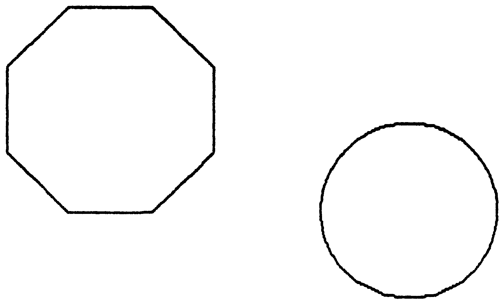
Ovenstående figur er lavet med følgende sætninger:
start
løft
tilbage 100
tegn
polygon 50 8
løft
frem 200
cirkel 50De 4 procedurer består af følgende sætninger:
begynd polygon side antalkanter
gentag antalkanter
frem side
venstre 360/antalkanter
hertil
slut
begynd trekant side
polygon side 3
slut
begynd firkant side
polygon side 4
slut
begynd cirkel radius
løft
frem radius
venstre 90
længde := radius*2*22/7/36+1
tilbage længde/2
tegn
polygon længde 36
løft
frem længde/2
højre 90
tilbage radius
tegn
slutFilen stjerne indeholder kun een procedure:
stjerne side antalsom tegner en stjerne, hvis antal er ulige. Hvis
antal er lige, kommer der en fejlmeddelelse.
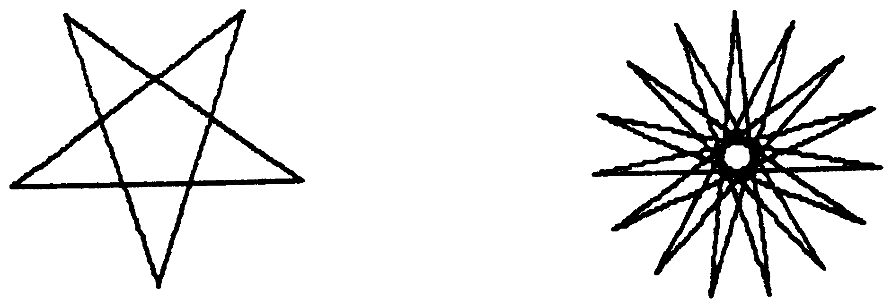
Ovenstående figur er lavet med følgende sætninger:
start
løft
tilbage 100
stjerne 100 5
frem 200
stjerne 100 15Procedure stjerne er lavet således (Bemærk:
antal=antal/2*2 tester, om antal er lige, da der bruges
heltalsdivision):
begynd stjerne side antal
hvis antal=antal/2*2
sætning antal skal være ulige
ellers
vinkel := antal/2*360/antal
tegn
gentag antal
frem side
venstre vinkel
hertil
løft
sluthvis
slutFilen spiral indeholder 3 procedurer:
spiral side vinkelitspiral side vinkeltlfspiralProceduren spiral er allerede defineret i afsnit 4.4.4.
Proceduren itspiral gør det samme som spiral,
men er lavet med en gentag-sætning og kaldes derfor en iterativ
procedure, hvorimod spiral er en rekursiv procedure (den
kalder sig selv). Procedure tlfspiral laver en spiral, hvor
vinkel er et tilfældigt tal mellem 90 og 179.
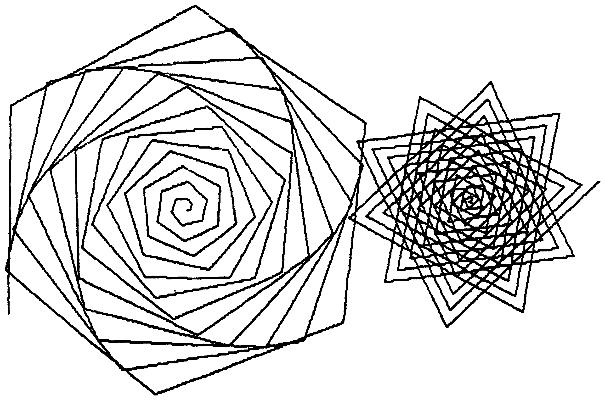
Figuren er lavet med følgende sætninger:
start
løft
sætxy -100 0
tegn
spiral 2 62
løft
sætxy 100 0
tegn
tlfspiralProcedurerne består af følgende sætninger:
begynd spiral side vinkel
hvis side>150
stop
ellers
frem side
venstre vinkel
spiral side+2 vinkel
sluthvis
slutbegynd itspiral side vinkel
gentag 100
frem side
venstre vinkel
side := side+2
hertil
slut
begynd tlfspiral
i := tlf(90)+90
spiral 2 i
slutFilen kasse indeholder 5 procedurer:
ethjørne sidekryds sidetohjørner sidehalvkryds sidestartop side antalDe 4 første er hjælpeprocedurer til proceduren startop.
Proceduren ethjørne tegner en kasse, hvor det ene hjørne
mangler; ethjørne kalder proceduren kryds, som
tegner de tre “indvendige” streger. Proceduren tohjørner
tegner en kasse, hvor to nabohjørner mangler; tohjørner
kalder proceduren halvkryds.
Proceduren startop laver en “trekant”, hvor siderne
består af kasser, og hvor der er “problemer” med perspektivet.
Parameteren antal angiver, hvor mange kasser der skal være
på hver side i “trekanten”.
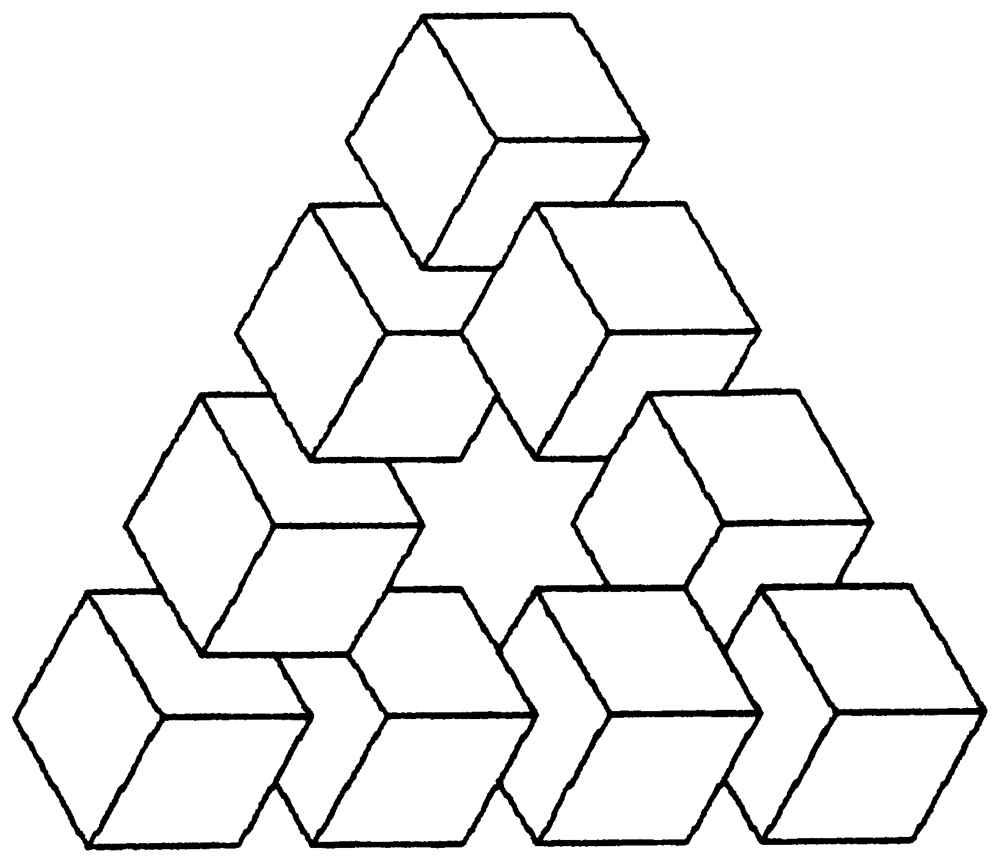
Tegningen er lavet med sætningen:
startop 40 4Proceduren tohjørner har tegnet den “anden” kasse på
hver side, mens ethjørne har tegnet de øvrige.
Procedurerne er lavet således:
begynd ethjørne side
tegn
gentag 4
frem side
venstre 60
hertil
frem side/2
løft
frem side/2
venstre 60
frem side/2
tegn
frem side/2
venstre 60
kryds side
løft
slutbegynd kryds side
venstre 60
frem side
venstre 60
frem side
tilbage side
højre 120
frem side
tilbage side
venstre 60
tilbage side
højre 60
slut
begynd tohjørner side
tegn
gentag 3
frem side
venstre 60
hertil
frem side/2
løft
frem side/2
venstre 60
frem side
venstre 60
frem side/2
tegn
frem side/2
venstre 60
halvkryds side
løft
slut
begynd halvkryds side
venstre 60
frem side
venstre 60
frem side/2
tilbage side/2
højre 120
frem side
tilbage side
venstre 60
tilbage side
højre 60
slutbegynd startop side antal
start
løft
sætxy -antal*side*3/4 -140
gentag 3
frem 3*side/2
tohjørner side
gentag antal-2
frem 3*side/2
ethjørne side
hertil
frem side
venstre 60
frem side
venstre 60
hertil
slutDette er en beskrivelse, der skal gøre det lettere for nybegyndere at starte med at bruge Mikro-Logo. Dette bilag er skrevet i “du-form”, da det helst skal virke som en instruktør, der hjælper dig i gang.
Du må ikke bruge distributionsdisketten, når du vil “køre” Mikro-Logo. Derfor skal du lave en kopi af distributionsdisketten (se Betjeningsvejledningen for maskinen) og flytte filerne fra kopien af distributionsdisketten for Mikro-Logo over på en systemdiskette (se bilag B).
Når maskinen er startet op som beskrevet i brugervejledningen for maskinen, installeres grafikken (også beskrevet i brugervejledningen).
Mikro-Logo startes så op fra styresystemet (dvs. når der på skærmen
står A> eller B> lige før markøren) ved
at skrive logo og trykke på Retur-tasten (det er en af de
store taster, der er markeret med ↵). Du skal sikre dig, at disketten
med Mikro-Logo er den aktuelle disk (bogstavet før >
angiver hvilken disk, der er den aktuelle). I brugervejledningen for
maskinen er det beskrevet, hvorledes du skifter aktuel disk.
I brugervejledningen for maskinen er det også beskrevet, hvorledes du kan få maskinen til automatisk at starte op med Mikro-Logo, og hvorledes du kan indlægge Logo i en menu, så Mikro-Logo kan startes op fra menu-systemet.
Når Mikro-Logo er startet op, vil der stå LOGO> i den
nederste linie (kommandolinien). Det betyder, at Mikro-Logo er klar til
at modtage kommandoer. Når du skriver kommandoer, kan du bl.a. bruge
tasterne ←, →, ⌫,
SLET TEGN og TEGN IND til at rette. Virkningen
er beskrevet i kapitel 3, men ved at prøve at bruge dem, er det rimelig
nemt at forstå virkningen af dem. Du skal bemærke, at det ikke er muligt
at flytte markøren længere til venstre end det første tegn og længere
til højre end en plads efter det sidste tegn.
Skriv nu pil i kommandolinien. Når du trykker på
Retur-tasten (markeret med ↵), vil kommandoen blive udført. Det gælder
altid, at der skal trykkes på Retur, for at kommandoerne i
kommandolinien udføres. Markøren behøver ikke stå sidst i
kommandolinien, når der trykkes på Retur.
Når kommandoen pil er udført, er der lavet en lille pil
midt på skærmen. Denne pil markerer en skildpadde, som du kan dirigere
ved at give den ordrer (også kaldet sætninger). Denne skildpadde har
hele tiden en position og en retning (se figur 18.a).
Skriv derefter frem 100 i kommandolinien. Skildpadden
flyttes 100 skridt i skildpaddens retning, når der trykkes på Retur (se
figur 18.b).
Hvis du nu skriver venstre 90, vil skildpadden ændre
retning, 90 grader til venstre i forhold til, hvor den pegede før (se
figur 18.c).
Lad os nu prøve med to ordrer i kommandolinien samtidig; de skal så
adskilles med ;
eks.: frem 100; venstre 90
Du skal bemærke, at ordren venstre er relativ i forhold
til, hvad retning skildpadden har, når ordren gives (se figur 18.d).
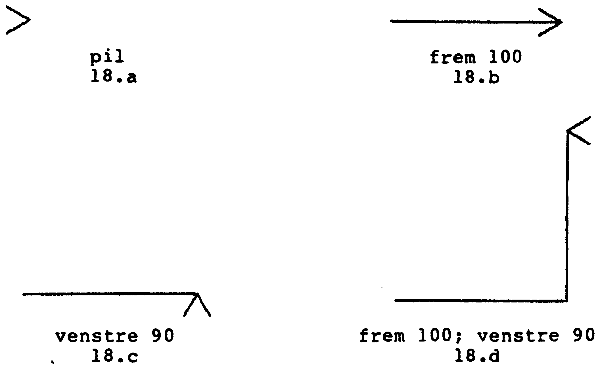
Ved at trykke på tasten F1 (i den øverste række på tastaturet) fremkommer de sætninger, der stod i kommandolinien. Det er nu muligt at rette i denne linie, eller du kan udføre linien igen ved at trykke på Retur. Hvis du trykker F1 og Retur og gør dette endnu en gang, får du et kvadrat frem.
Der er selvfølgelig også andre sætninger, bl.a. tilbage
og højre, som begge skal have et argument ligesom
frem og venstre, og start, som
visker tegningen ud og placerer skildpadden midt på skærmen. Prøv nu at
bruge start og lav en tegning, så du får lidt øvelse i at
styre skildpadden (du kan f.eks. tegne en trekant eller et af
bogstaverne i dit navn).
Når du flytter skildpadden (f.eks. med frem eller
tilbage), tegner den en streg. Det er også muligt at flytte
uden at tegne. Endelig er det muligt at slette. Dette gøres ved
henholdsvis løft og slet. Skildpadden sættes
til at tegne
igen ved sætningen tegn. Hver gang du udfører sætningen
start, vil skildpadden automatisk blive ændret til at
tegne. Se eksemplerne i figur 19.
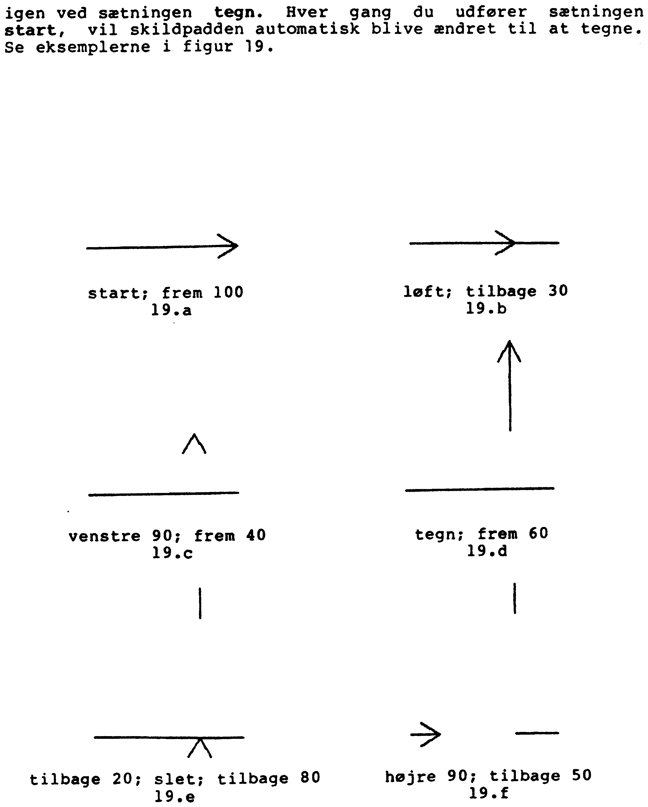
Du kan nu kigge på de tre eksempler i afsnit 4.2.5; du skal ikke
bekymre dig om sætningerne pilind, hvor og
sætxy; de forklares senere. Du kan også selv lave nogle
eksempler.
Læs nu afsnit 4.1.1 om variable. Hvis du laver en tildelingssætning,
f.eks. vinkel := 90, betyder det, at vinkel er
en variabel, der har værdien 90, så højre vinkel betyder,
at retningen ændres med 90 grader til højre. Variablen
vinkel har værdien 90, men vi kan godt ændre værdien,
f.eks. ved en ny tildelingssætning. Variable er meget anvendelige, når
vi bruger procedurer, men de introduceres allerede nu, da de bruges i
nogle af eksemplerne i afsnit 4.2. I afsnit 4.2 bruges også udtryk, som
er parameter til f.eks. frem. Disse parametre kan være
andet end tal, f.eks. venstre 2*vinkel, som drejer
retningen 2 gange den aktuelle værdi af vinkel til venstre.
Der må ikke være blanke (“mellemslag”) i udtryk.
Med dette oplæg skulle det være muligt at læse hele afsnit 4.2 og danne sig et overblik over de simple sætninger. Læs også afsnit 4.3.1 (resten af 4.3 kan godt vente til senere).
Prøv nu at læse afsnit 4.4. Du vil måske støde på problemer undervejs, men læs bare videre, så du får en ide om hvilke andre sætninger, der findes.
Skriv nu lær i kommandolinien (husk Retur). Tegningen
forsvinder nu, og der står begynd i den næstøverste linie.
Det er nu muligt at skrive en procedure. Du kan enten skrive en af dem
fra afsnit 4.4.4 eller selv lave en.
Du skal huske, at der kun må være een sætning i hver linie (dvs. ikke
noget med ;). Du behøver ikke bekymre dig om indrykning,
sådan som alle eksemplerne i afsnit 4.4.4 har; systemet laver selv
indrykninger i proceduren, når den er oversat.
Hvis du laver en fejl under indtastningen, kan du rette ved at bruge
de samme taster, som du kunne bruge under retning i kommandolinien, og
desuden tasterne ↑, ↓, og de 4 A-taster i den
øverste række af tastaturet. Betydningen af de 4 A-taster står i linien
lige over kommandolinien. Alle editeringstaster er beskrevet i afsnit
5.1.1. Når du er færdig med at skrive proceduren ind, trykker du på
tasten A4, som oversætter proceduren. Hvis der er fejl i oversættelsen,
kommer der en fejlmeddelelse i den øverste linie. (Fejlmeddelelserne er
beskrevet i bilag E). Hvis der er en fejl, skriver du ret i
kommandolinien og trykker på Retur, og når systemet beder om et
procedurenavn, skriver du navnet på den procedure, du er ved at lave, og
du får derved mulighed for at rette den.
Når proceduren er oversat korrekt, kan den udføres. Du skriver procedurenavnet efterfulgt af udtryk svarende til parametrene i kommandolinien, trykker på Retur, og proceduren udføres.
Du kan nu øve dig med at lave flere procedurer og udføre disse. Du kan f.eks. lave procedurer til at tegne stjerner eller blomster.
Når du er ved at oprette en procedure (kommandoen lær)
eller rette en eksisterende procedure (kommandoen ret), kan
du fortryde ved at trykke på ESC-tasten. Så bliver der ikke gjort noget
ved proceduren, og systemet er igen klar til kommandoer. Kommandoen
hvilke giver en oversigt over de procedurer, der er i
systemet.
Når du har lavet nogle procedurer, kan du gemme dem på disketten, så
du kan få fat i dem næste gang, du bruger Mikro-Logo. Dette gøres ved at
udføre kommandoen gem. Den beder først om et procedurenavn
— her er det ofte en fordel at skrive alle, idet dette
betyder, at alle procedurer gemmes. Herefter beder den om et filnavn —
du skriver her et navn på op til 8 bogstaver (dog ikke æ, ø og å) eller
cifre.
Kommandoen disk giver oplysninger om hvilke filer, der
indeholder Logo-procedurer på disketten. Procedurerne fra en fil kan
hentes ind i systemet med kommandoen hent. Inden dette
gøres, er det ofte en fordel at bruge kommandoen glem med
procedurenavnet alle, da du herved sletter alle de
procedurer, der er i systemet i forvejen. Dette er ofte en fordel, da
oversættelsen er hurtigere, jo færre procedurer der er, og da der er en
øvre grænse for, hvor mange procedurer der kan være i systemet.
Når du er færdig med at bruge Mikro-Logo for denne gang, bruger du
kommandoen farvel. Inden skal du huske at gemme de
procedurer, du har lavet eller ændret i, hvis du vil bruge dem
senere.
Du bør nu læse hele afsnit 5.1 og 5.2 og derefter øve dig noget mere. Hvis du får problemer, skal du kigge i denne manual; her vil stikordsregistret ofte være en stor hjælp. På et tidspunkt skal du læse alle kapitlerne i denne manual, da dette bilag ikke er en udtømmende beskrivelse. Specielt kan kapitel 6 være anvendeligt, når du begynder at lave mere komplicerede tegninger med rekursive procedurer.
Dette er en tabel over tegnenes ASCII-værdier, som bruges i
sætningerne henttast og læstast (se
4.3.2).
Nogle få af tegnene er blevet omdøbt, så hele det danske alfabet er med.
| Talværdi | ASCII tegn | Dansk tegn | Talværdi | ASCII tegn | Dansk tegn | |
|---|---|---|---|---|---|---|
| 0 | NUL | 32 | SPACE | |||
| 1 | SOH | 33 | ! | |||
| 2 | STX | 34 | ” | |||
| 3 | ETX | 35 | # | § | ||
| 4 | EOT | 36 | $ | |||
| 5 | ENQ | 37 | % | |||
| 6 | ACK | 38 | & | |||
| 7 | BEL | 39 | ’ | |||
| 8 | BS | 40 | ( | |||
| 9 | HT | 41 | ) | |||
| 10 | LF | 42 | * | |||
| 11 | VT | 43 | + | |||
| 12 | FF | 44 | , | |||
| 13 | CR | 45 | - | |||
| 14 | SO | 46 | . | |||
| 15 | SI | 47 | / | |||
| 16 | DLE | 48 | 0 | |||
| 17 | DC1 | 49 | 1 | |||
| 18 | DC2 | 50 | 2 | |||
| 19 | DC3 | 51 | 3 | |||
| 20 | DC4 | 52 | 4 | |||
| 21 | NAK | 53 | 5 | |||
| 22 | SYN | 54 | 6 | |||
| 23 | ETB | 55 | 7 | |||
| 24 | CAN | 56 | 8 | |||
| 25 | EM | 57 | 9 | |||
| 26 | SUB | 58 | : | |||
| 27 | ESC | 59 | ; | |||
| 28 | FS | 60 | < | |||
| 29 | GS | 61 | = | |||
| 30 | RS | 62 | > | |||
| 31 | US | 63 | ? |
| Talværdi | ASCII tegn | Dansk tegn | Talværdi | ASCII tegn | Dansk tegn | |
|---|---|---|---|---|---|---|
| 64 | @ | 96 | ` | |||
| 65 | A | 97 | a | |||
| 66 | B | 98 | b | |||
| 67 | C | 99 | c | |||
| 68 | D | 100 | d | |||
| 69 | E | 101 | e | |||
| 70 | F | 102 | f | |||
| 71 | G | 103 | g | |||
| 72 | H | 104 | h | |||
| 73 | I | 105 | i | |||
| 74 | J | 106 | j | |||
| 75 | K | 107 | k | |||
| 76 | L | 108 | l | |||
| 77 | M | 109 | m | |||
| 78 | N | 110 | n | |||
| 79 | O | 111 | o | |||
| 80 | P | 112 | p | |||
| 81 | Q | 113 | q | |||
| 82 | R | 114 | r | |||
| 83 | S | 115 | s | |||
| 84 | T | 116 | t | |||
| 85 | U | 117 | u | |||
| 86 | V | 118 | v | |||
| 87 | W | 119 | w | |||
| 88 | X | 120 | x | |||
| 89 | Y | 121 | y | |||
| 90 | Z | 122 | z | |||
| 91 | [ | Æ | 123 | { | æ | |
| 92 | \ | Ø | 124 | | | ø | |
| 93 | ] | Å | 125 | } | å | |
| 94 | ^ | Ü | 126 | ~ | ü | |
| 95 | _ | 127 | DEL |
(Denne side er blank i originalen)
Systemet har tre hovedfunktioner:
hvor oversættelse og udførelse af sætninger gælder både sætninger skrevet i procedurer og sætninger skrevet i kommandolinien.
Under disse tre funktioner kan der forekomme forskellige fejl eller beskeder til brugeren. Når der er en fejl, betyder det, at systemet ikke kan fortsætte og må afbryde udførelsen eller oversættelsen. Når brugeren får en besked, betyder det, at systemet behøver mere information, eller at brugeren har lavet en fejl, men kan nå at rette den. I de nedenstående meddelelser bruges X som en ubekendt og kan være en vilkårlig streng af tegn.
Hvad betyder X?
X er ikke blevet genkendt som en lovlig kommando (eller sætning; denne
fejl er derfor også nævnt i E.2.1).
X findes ikke
Der er ikke nogen procedure, der hedder X.
Indre lager tomt
Der er slet ikke defineret nogle procedurer. Fejlmeddelelsen kommer, når
man giver alle med som procedurenavn.
Det er kun muligt at rette en procedure ad gangen
Navnet alle er givet med som procedurenavn til kommandoen
ret.
Sidste procedure kan ikke være i lageret
Der er ikke plads til alle linier af den sidste procedure. Proceduren
bliver derfor ikke gemt. Den kan først oprettes, når der er blevet
slettet andre procedurer.
Ikke plads til denne linie
Under udførelse af kopi, tegnigen eller
fortryd kan brugeren komme ud for denne fejlmeddelelse,
hvis der er blevet defineret procedurer siden sidste
glem alle, start eller viskud.
Denne meddelelse kan også forekomme, hvis der skrives sætninger i
kommandolinien (se E.2.1).
Start kan ikke fortrydes
Viskud kan ikke fortrydes
Det er ikke muligt at fortryde sætninger, der laver start
eller viskud.
Fil findes ikke
Filen findes ikke på disketten.
Ingen plads på disketten
Der er enten for mange filer på disketten, eller også er der for lidt
plads til endnu en fil.
Filfejl nr. X
Der er andre fejl ved en fil på disketten. Prøv at gentage kommandoen
med en anden fil for at se, om det er filen eller disketten, der er fejl
ved.
Fejl i begynd
Efter editering er der ikke et begynd efterfulgt af et
procedurenavn i den første linie. Ret proceduren eller afbryd med
ESC.
For mange linier
Efter editering er der for mange linier i proceduren (der er ikke plads
til slut). Ret proceduren eller afbryd med ESC.
Proceduren er for lang - vil du rette den?
Hvis kommandoen lav udføres, og der er udført mere end 19
sætninger fra kommandolinie siden sidste glem alle,
start eller viskud, kan der ikke laves en
procedure med alle sætninger. Men det er muligt at rette i proceduren
indeholdende de første 19 sætninger eller de sidste 19 sætninger.
Ulovligt tegn i CCP/M filnavn
Der er brugt andre tegn end bogstaver (dog ikke æ, ø og å) og cifre i et
filnavn. Ret det eller afbryd med ESC.
Vil du slette eksisterende fil?
Forsøg på at gemme på en fil, der allerede eksisterer. Brugeren skal
bekræfte, at den gamle fil skal slettes.
Er der en skriver (plotter, Holger) koblet til?
Brugeren skal fortælle, om de er sat til, når de skal bruges, og hvor de
er sat til (på centralenheden eller disketteenheden).
Hvis der findes fejl i oversættelsen af en sætning i en procedure udskrives udover fejlmeddelelsen også procedurenavnet og sætningen, så det er lettere at finde fejlen.
Hvis der er fejl i oversættelsen af en procedure, er der ingen procedurer, der kan udføres, før alle fejl er rettet.
Hvad betyder X?
X er ikke genkendt som en sætning eller procedure (se også E.1.1).
Navn eller tal mangler
Det er forventet, at der kommer et tal eller et variabelnavn, men der er
slet ingen tegn.
Navn eller tal forventet, ikke X
Som ovenfor, men det første tegn i X er hverken et ciffer eller et
bogstav.
Ulovligt tal X
X består af andet end cifre.
Ikke plads til tal
Der er brugt mere end 40 forskellige tal.
Ikke plads til navn
Der er brugt mere end 40 forskellige variabelnavne.
Højre-parentes mangler
) mangler til at afslutte (.
tlf skal følges af (
tlf kræver, at argumentet skal være i parenteser; der skal
derfor komme en ( lige efter tlf.
Fejl i udtryk ved X
Der er mere tilbage i udtryk, men det starter ikke med en operator som
forventet, men med X.
Mere end eet udtryk: X
En sætning, der kræver præcis eet argument, efterfølges af X udover det
ene udtryk.
Intet udtryk forventet: X
En sætning, som ingen argumenter har, efterfølges af X.
X er ikke et navn
Tildelings- og indlæsningssætninger samt hvor kræver, at
argumenterne er variabelnavne, og det er X ikke.
For mange navne: X
Der er mere (X) end de variabelnavne, der er argumenter til tildelings-
og indlæsningssætninger samt hvor.
sætxy skal have 2 tal
sætxy kræver 2 argumenter.
udport skal have 2 tal
udport kræver 2 argumenter.
For mange løkker
Der er for mange gentag- og hvis-sætninger
inden i hinanden.
Fejl i løkke
Der er gentag- eller hvis-sætninger, der ikke
er afsluttet.
For mange ellers/sluthvis
Der er flere ellers/sluthvis, end der er
hvis.
For mange hertil
Der er flere hertil end gentag.
hertil ventet
Forsøg på at afslutte en hvis-sætning, men der er en
gentag-sætning, der skal afsluttes først.
ellers/sluthvis ventet
Forsøg på at afslutte en gentag-sætning, men der er en
hvis-sætning, der skal afsluttes først.
Kun eet ellers
Forsøg på at lave en hvis-sætning med flere
ellers.
X (et procedurenavn) skal starte med et bogstav
Et procedurenavn skal starte med et bogstav.
Højst 6 parametre
En procedure må højst have 6 parametre.
X (en formel parameter) skal starte med et bogstav
De formelle parametre skal være navne, der starter med et bogstav.
Parameterantal forkert
Antal parametre i et procedurekald passer ikke med
proceduredefinitionen.
For mange procedurer
Der er defineret for mange procedurer.
Ikke plads til denne linie
Kan forekomme, når der skrives sætninger i kommandolinien. Det er
nødvendigt at slette procedurer for at gøre plads til at udføre denne
sætningslinie. Denne meddelelse kan også forekomme ved kommandoerne
kopi, tegnigen og fortryd (se
også E.1.1).
Parameterstak fuld
Det samlede antal udtryk fylder for meget. Det er nødvendigt at slette
procedurer eller gøre nogle udtryk simplere for at undgå denne fejl.
sætning/begynd/slut er ikke tilladt
Det er ikke tilladt at bruge sætning eller definere
procedurer direkte i kommandolinien.
Der er ingen beskeder, da det ikke er muligt for brugeren at rette
fejl i oversættelsen direkte. Brugeren skal rette fejl i procedurer ved
kommandoen ret. Fejl i kommandolinien kan rettes ved at
fremkalde kommandolinien med funktionstasten F1 og rette med
editeringstasterne. Hvis der er fejl i oversættelsen af procedurer, er
det ikke muligt at udføre nogle procedurer, før fejlen er rettet.
Division med 0
Det er ikke tilladt at dividere med nul.
Potens er negativ
Det er ikke tilladt at opløfte til en negativ potens, da systemet kun
regner med heltal.
tlf kræver et positivt tal
Argumentet til tlf skal være et positivt tal.
Ikke mere lager
En rekursiv procedure er løbet mod grænsen for, hvor mange gange den kan
udføres.
For mange linier, hvis lav, kopi eller tegnigen bruges
Der er brugt for mange sætninger i kommandolinien siden sidste
glem alle, start eller viskud.
Hvis brugeren bruger en af kommandoerne lav,
kopi eller tegnigen, vil det ikke give det
rigtige resultat. Det anbefales at slette tegningen og lave procedurer
til at lave dele af tegningen.
For mange tlf tal eller input - fortryd, kopi og tegnigen bliver forkerte
Der er brugt for mange tilfældige tal og indlæsningssætninger siden
sidste glem alle, start eller
viskud i kommandolinien. Kommandoerne fortryd,
kopi og tegnigen vil ikke give det rigtige
resultat. Det anbefales at overveje at omstrukturere procedurerne, så
der ikke bruges så mange indlæsninger og tilfældige tal og starte forfra
på tegningen.
| Sætning og evt. argumenter | Beskrevet i afsnit |
|---|---|
frem udtryk /
fr udtryk |
4.2.1 |
tilbage udtryk /
tb udtryk |
4.2.1 |
venstre udtryk /
ve udtryk |
4.2.2 |
højre udtryk /
hø udtryk |
4.2.2 |
tegn |
4.2.3 |
slet |
4.2.3 |
løft |
4.2.3 |
start |
4.2.4 |
viskud |
4.2.4 |
hjem |
4.2.4 |
sætxy udtryk udtryk |
4.2.1 |
sætx udtryk |
4.2.1 |
sæty udtryk |
4.2.1 |
drejtil udtryk |
4.2.2 |
hvor variabel variabel variabel |
4.2.4 |
pilind |
4.2.4 |
pilud |
4.2.4 |
variabel := udtryk /
variabel = udtryk |
4.3.1 |
henttal variabel |
4.3.2 |
henttast variabel |
4.3.2 |
læstast variabel |
4.3.2 |
skriv udtryk |
4.3.3 |
sætning tekst |
4.3.3 |
udport udtryk udtryk |
4.3.3 |
| Sætning og evt. argumenter | Beskrevet i afsnit |
|---|---|
hvis udtryk sætninger ellers sætninger sluthvis |
4.4.2 |
hvis udtryk sætninger sluthvis |
4.4.2 |
gentag udtryk sætninger hertil |
4.4.3 |
begynd pnavn parameternavne
sætninger slut |
4.4.4 |
stop |
4.4.4 |
| Kommando og evt. argumenter | Funktionstast | Beskrevet i afsnit |
|---|---|---|
lær |
F5 | 5.1.1 |
ret pnavn |
F6 | 5.1.1 |
lav pnavn |
5.1.1 | |
list pnavn |
F2 | 5.1.2 |
plist pnavn |
5.1.2 | |
hvilke |
F3 | 5.1.2 |
glem pnavn |
F4 | 5.1.2 |
disk |
F9 + Retur | 5.2 |
disk bogstav |
F9 + bogstav + Retur | 5.2 |
pdisk |
5.2 | |
pdisk bogstav |
5.2 | |
gem pnavn filnavn |
F11 | 5.2 |
tilføj pnavn filnavn |
F12 | 5.2 |
hent filnavn |
F10 | 5.2 |
fjern filnavn |
5.2 | |
kopi |
F7 | 5.3 |
tegnigen |
5.3 | |
holger |
5.3 | |
plotter |
5.3 | |
fortryd |
F8 | 5.4 |
pil |
5.4 | |
status |
5.4 | |
farvel |
5.4 | |
hjælp |
5.4 | |
phjælp |
5.4 | |
R / Ctrl-F |
5.4 | |
Ctrl-P |
5.3 | |
F1 / ↖ |
3.2 |
| Nr. | Titel | Side |
|---|---|---|
| 1. | Skærmen er inddelt i 3 felter | 3 |
| 2. | Skærmbillede under udførelse af sætning | 5 |
| 3. | Tegneområdets størrelse på en PICCOLINE | 7 |
| 4. | Et kvadrat | 17 |
| 5. | Kvadrat med markeret skildpadde | 18 |
| 6. | Et M | 19 |
| 7. | Et H | 20 |
| 8. | H ændret til h | 21 |
| 9. | Et hus | 24 |
| 10. | To polygoner | 25 |
| 11. | Spiral 2 90 | 29 |
| 12. | Skærmbillede når en procedure rettes | 34 |
| 13. | En gulv-skildpadde | 40 |
| 14. | Polygon og cirkel | 49 |
| 15. | Stjerner | 51 |
| 16. | Spiraler | 53 |
| 17. | Umulig figur | 55 |
| 18. | Dele af en tegning | 60 |
| 19. | Eksempel med løft og slet | 61 |
| Stikord | Side |
|---|---|
| accept i editor | 33 |
| afbryde udførelsen | 43 |
| aktuelle parametre | 25 |
| argumenter til kommandoer | 31 |
| begynd | 28 |
| betingelsessætninger | 26 |
| brugerdefineret sætning | se procedure |
| Ctrl-F | 42 |
| Ctrl-P | 41 |
| definition af procedure | 28 |
| disk | 37, 38 |
| diskette | 37 |
| diskettekommandoer | 37 |
| diskettestation | 37 |
| distributionsdiskette | 1, 48 |
| drejtil | 14 |
| editering, fortrydelse af | 33 |
| editeringstaster | 4 |
| editeringstaster i editor | 32 |
| editor | 32 |
| editor, accept i | 33 |
| editor, editeringstaster i | 32 |
| ellers | 26 |
| ESC | 5, 23, 31, 33, 36, 43 |
| farvel | 41 |
| fejl i oversættelse | 33 |
| fejlmeddelelser | 67 ff. |
| fil | 37 |
| filnavn | 37 |
| fjern | 39 |
| formelle parametre | 28 |
| fortegn | 9, 10 |
| fortryd | 42 |
| fortrydelse af editering | 33 |
| fr | 12 |
| frem | 12 |
| funktionstaster | 31, 75 |
| funktionsudtryk | 9 |
| gem | 38 |
| Stikord | Side |
|---|---|
| gentag | 27 |
| gentagelsessætninger | 27 |
| glem | 34, 35, 36, 39 |
| gulv-skildpadde | 39 |
| hent | 38 |
| henttal | 22 |
| henttast | 22 |
| hertil | 27 |
| hjem | 15 |
| hjælp | 42 |
| hvilke | 36 |
| hvis | 26 |
| hvor | 16 |
| hø | 14 |
| højre | 14 |
| indlæsningssætninger | 22 |
| installation | 48 |
| iterativ procedure | 52 |
| kommandoer | 3, 31 ff., 75 |
| kommandoer, argumenter til | 31 |
| kommandolinie | 3 |
| kontrolsætninger | 24 |
| kopi | 39 |
| lager | 42 |
| lav | 34, 35 |
| list | 36 |
| logisk eller | 11 |
| logisk og | 11 |
| Logo i undervisningen | 2 |
| lær | 32, 35 |
| læsevejledning | 1, 58 |
| læstast | 23 |
| løft | 15 |
| mellemrumstasten | 23, 36, 43 |
| operatorer | 8 |
| operatorer, prioritet af | 10 |
| opstart | 1, 58 |
| ordrer til skildpadde | se sætninger |
| oversættelse af procedurer | 33 |
| oversættelse, fejl i | 33 |
| overvåge udførelsen | 43 |
| parametre | 25, 28 |
| Stikord | Side |
|---|---|
| parametre, aktuelle | 25 |
| parametre, formelle | 28 |
| parentesudtryk | 9 |
| pdisk | 31, 38 |
| pentype | 15 |
| phjælp | 31, 42 |
| pil | 41 |
| pilind | 16 |
| pilud | 16 |
| plist | 31, 36 |
| plotter | 40 |
| position | 7, 12 |
| printer | se skriver |
| prioritet af operatorer | 10 |
| procedure | 24, 28 |
| procedure, definition af | 28 |
| procedure, udførelse af | se procedurekald |
| procedurehoved | 28 |
| procedurekald | 24 |
| procedurekommandoer | 32 |
| procedurekrop | 28 |
| procedurer, oversættelse af | 33 |
| rekursiv procedure | 29, 52 |
| relationelle operatorer | 10, 11 |
| ret | 32, 35 |
| retning | 7, 14 |
| Retur | 4, 23, 33, 43, 58 |
| skildpadde | 2, 7, 12 |
| skildpaddeordrer | se sætninger |
| skildpaddesætninger | se sætninger |
| skriv | 23 |
| skriver | 31 |
| skærmbillede | 3 |
| slet | 15 |
| slut | 28 |
| sluthvis | 26 |
| start | 16, 34, 35, 39 |
| status | 41 |
| stop | 30 |
| systemdiskette | 48 |
| sætning | 23 |
| sætninger | 4, 7 ff., 73 |
| sætningslinie | 4 |
| sætx | 13 |
| sætxy | 13 |
| sæty | 13 |
| Stikord | Side |
|---|---|
| talkonstanter | 9 |
| tb | 12 |
| tegn | 15 |
| tegneområde | 3, 5, 7, 13 |
| tegnesætninger | 12 |
| tegnigen | 39 |
| tilbage | 12 |
| tildelingssætninger | 22 |
| tilføj | 38 |
| tlf | 9 |
| udførelse af kommandolinie | 4 |
| udførelse af procedure | se procedurekald |
| udførelsen, afbryde | 43 |
| udførelsen, overvåge | 43 |
| udlæsningssætninger | 23 |
| udport | 23 |
| udtryk | 8 ff. |
| variabel | 8, 9 |
| ve | 14 |
| venstre | 14 |
| viskud | 15, 34, 35, 39 |
Titel: Mikro-Logo Brugervejledning
RCSL Nr.: 29 0 00852
A/S Regnecentralen af 1979 bestræber sig på at forbedre kvalitet og brugbarhed af sine publikationer. For at opnå dette ønskes læserens kritiske vurdering af denne publikation.
Kommenter venligst manualens fuldstændighed, nøjagtighed, disposition, anvendelighed og læsbarhed:
Angiv fundne fejl (reference til sidenummer):
Hvordan kan manualen forbedres:
Andre kommentarer:
Navn:
Stilling:
Dato:
På forhånd tak!
Riv ikke - Fold her og hæft.
Frankeres
som
brev
REGNECENTRALEN
af 1979
Informationsafdelingen
Lautrupbjerg 1
2750 Ballerup